Samba Solar Track
Einrichten, prüfen und einstellen, Schritt für Schritt
Vom ersten Einschalten über das Setup-Programm bis zu jedem einzelnen Wert. In erster Linie für das Samba-Solar-Rack, genauso für jede andere Nachführung mit einer oder zwei Achsen.
Mit Kapitel 2 beginnen und der Reihe nach vorgehen. Einen Wert nachschlagen?
Kapitel 7 erklärt jeden Wert, Anhang A zeigt alle auf einen Blick.
© Silvio Sternitzke, 11/2026 · Samba Solar Track · Einrichtungs- und Einstellungshandbuch 10 Zoll · Lizenz CC BY-NC-SA 4.0 · keine kommerzielle Verwendung durch Dritte
Alles, was dieses Handbuch beschreibt, ist in der Firmware 0.7.0 umgesetzt und am PC sowie in der Simulation geprüft (automatische Tests, Bilder aus dem echten Code der Oberfläche). An einem echten Rack mit Antrieben, Windmesser und Sonnensensor ist es noch nicht erprobt; die Platine RearCircuitBoard_10 ist noch nicht gefertigt. Grenzwerte für die Prüfungen des Setup-Programms werden erst festgelegt, wenn die Antriebe geliefert und am Rack gemessen sind. Annahmen sind im Text mit Annahme markiert.
1Über dieses Handbuch
Dieses Handbuch führt dich vom ersten Einschalten der Steuerung bis zur fertig eingestellten Nachführung. Du brauchst keine Vorkenntnisse. Jeder Fachbegriff steht im Glossar.
Was dieses Handbuch abdeckt
- Die Einrichtung am Display: Sprache, Betriebsart, Windmesser, Netzwerk, Uhrzeit, Fernzugriff, Design, Ton, Bildschirm und Firmware (Kapitel 4).
- Das Setup-Programm: Es prüft am fertigen Rack Schritt für Schritt jede Funktion und jeden Fahrweg. Erst danach führt die Anlage von selbst nach (Kapitel 5).
- Standort, Ausrichtung, Sonne und Nacht: Wo steht das Rack, wohin schaut es, wann ist Nacht (Kapitel 6).
- Jeden einstellbaren Wert mit Bedeutung, Voreinstellung, Grenzen, einer Empfehlung für das Samba-Solar-Rack und einer Anleitung für jede andere Anlage (Kapitel 7).
- Was du im Browser einstellen kannst und was nur am Display geht (Kapitel 8).
Was es nicht abdeckt
- Den Aufbau der Mechanik. Dafür gilt das Montagehandbuch des Samba-Solar-Rack (Website und Shop) oder die Anleitung deines Gestells.
- Das Anschließen der Leitungen. Dafür gilt das Verkabelungshandbuch (Datei
verkabelung.htmlim selben Ordner). - Die Platinen, das Aufspielen der Firmware und die Prüfung der Hardware. Dafür gilt das Handbuch für Aufbau und Bedienung (Datei
index.html).
Beginne mit diesem Handbuch erst, wenn das Rack aufgebaut, die Verkabelung fertig und geprüft ist (Verkabelungshandbuch) und die Steuerung Strom hat. Das Setup-Programm bewegt das Rack.
Eine oder zwei Achsen: so sind die Abschnitte markiert
Samba Solar Track arbeitet in zwei Betriebsarten. Die meisten Anwender haben zwei Achsen; beide Betriebsarten sind hier gleichwertig beschrieben. Was nicht für beide gilt, trägt eine Marke:
1 Achse
Betriebsart „nur vertikal“. Das Rack ändert nur seine Neigung (Elevation). So arbeitet das Samba-Solar-Rack.
2 Achsen
Betriebsart „vertikal + horizontal“. Das Rack neigt sich und dreht sich zusätzlich von Ost nach West (Azimut).
beide
Gilt für jede Anlage. Abschnitte ohne Marke gelten ebenfalls für beide.
freiwillig
Darf übersprungen werden. Die Steuerung arbeitet auch ohne diesen Punkt sicher.
So liest du die Schritte
Jeder Schritt im Setup-Programm hat vier Felder:
Was das Display zeigt. Dazu gehört fast immer ein Bild des Bildschirms.
Welche Taste du drückst und was du am Rack machst.
Das erwartete Ergebnis. Erst weitermachen, wenn es stimmt.
Was du dann tust. Mehr Hilfe steht in der Fehlersuche.
Alle Bilder des Bildschirms stammen aus dem echten Code der Oberfläche, am PC erzeugt. Am Gerät können Zahlen (Wind, Helligkeit, Uhrzeit) anders aussehen. Gezeigt wird das Design „Standard“ in deutscher Sprache. Bilder mit 1 Achse heißen y1_…, Bilder mit 2 Achsen y2_….
2Der Weg zur fertigen Anlage
Die Steuerung wird in vier Etappen eingerichtet. Die Reihenfolge ist fest: Ohne Einrichtung fährt kein Antrieb, ohne Setup-Programm führt die Anlage nicht von selbst nach.
- Sprache wählenBeim ersten Einschalten erscheint die Sprachwahl von selbst, ab Werk auf Englisch. Die Wahl gilt sofort. Ergebnis: Alle Texte stehen in deiner Sprache. Kapitel 4.1
- Einrichtung: Betriebsart und WindmesserDu wählst 1 oder 2 Achsen und deinen Windmesser und tippst SPEICHERN + NEUSTART. Ergebnis: Die Steuerung startet neu. Ab jetzt wirken Sturmschutz und die Überwachung des Windmessers. Kapitel 4.2
- Setup-ProgrammEs öffnet sich nach dem Neustart von selbst und prüft am Rack alles nacheinander: Platine, Windmesser, Fahrrichtungen, Fahrwege, Sonnensensor, Probelauf. Ergebnis: „Geschafft! Alle Prüfungen sind bestanden.“ Die Automatik ist frei. Kapitel 5
- FeineinstellungStandort und Ausrichtung, Werte der Nachführung, Ton, Bildschirm, Fernzugriff. Ergebnis: Die Anlage arbeitet so, wie du es willst. Kapitel 6 und 7
Die Einrichtung dauert wenige Minuten. Für das Setup-Programm nimm dir Zeit und wähle einen Tag mit wenig Wind und etwas Sonne: Die Antriebe fahren mehrmals über den ganzen Weg und brauchen zwischendurch Pausen (Einschaltdauer, Kapitel 7). Du kannst das Setup-Programm jederzeit mit SPÄTER WEITERMACHEN unterbrechen und später an derselben Stelle fortsetzen.
Was die Steuerung in jeder Etappe tut
| Etappe | Antriebe | Sturmschutz | Automatik (Nachführung, Nacht) |
|---|---|---|---|
| Einrichtung fehlt | fahren nie | noch nicht | aus |
| Einrichtung gespeichert, Setup-Programm offen | nur im Setup-Programm, im Handbetrieb und bei Sturm | wirkt: Bei Sturm fährt das Rack flach | gesperrt, violettes Band „SETUP-PROGRAMM FEHLT“ |
| Setup-Programm abgeschlossen | normal | wirkt | frei |
Sturmschutz und Parken fahren das Rack „flach“. In welche Richtung das bei deinem Rack ist, prüft das Setup-Programm in Schritt 5. Bis dahin gilt die Voreinstellung. Fang das Setup-Programm deshalb nicht bei Sturm an und bleib dabei, bis Schritt 5 bestanden ist.
3Achsen und Richtungen
Bevor das Rack zum ersten Mal fährt: Diese Wörter kommen auf dem Display immer wieder vor. Sie gelten für jedes Rack.
Eine Achse: die Neigung (Elevation) 1 Achse auch bei 2 Achsen
- STEILER: Die Paneele richten sich auf, ihre obere Kante geht hoch. Gebraucht morgens, abends und im Winter, wenn die Sonne tief steht.
- FLACHER: Die Paneele legen sich hin, Richtung waagrecht. Gebraucht mittags im Sommer, bei Sturm und nachts.
- Die Tasten am Display heißen STEILER und FLACHER. Die Klemmen der Platine heißen weiterhin RAUF und RUNTER. Welche Klemme „flacher“ bedeutet, legt der Wert „Flachstellung liegt Richtung RAUF“ fest; das Setup-Programm prüft ihn.
Zwei Achsen: Neigung und Drehung (Azimut) 2 Achsen
- OST: Das Rack dreht sich zur Morgensonne. Am Ausgang der Platine ist das der Kontakt OST (Klemme J5).
- WEST: Das Rack dreht sich zur Abendsonne (Kontakt WEST, Klemme J6).
- Es fährt immer nur eine Achse zugleich. Das schont das Netzteil.
- Das Samba-Solar-Rack hat nur die Neigung. Wer zwei Achsen hat, nutzt ein anderes Gestell; dafür steht bei jedem Wert in Kapitel 7, wie du den richtigen Wert findest.
Flachstellung: die sichere Lage
| Anlass | Elevation | Azimut 2 Achsen | Vorrang |
|---|---|---|---|
| Sturm (Böe über der Sturmschwelle) | fährt flach, bleibt flach bis zum Ende der Haltezeit | bleibt stehen | höchster; lässt sich nicht übersteuern |
| Windmesser antwortet nicht | fährt flach, Automatik gesperrt | bleibt stehen | hoch; Handbetrieb bleibt möglich, dann ohne Sturmschutz |
| FLACH PARKEN (Taste) | fährt flach, bleibt bis PARKEN AUFHEBEN | bleibt stehen | über der Automatik |
| Nacht | fährt flach (0-Lage) | danach nach Osten, wenn „Nachts zurück nach Osten“ ein ist | normale Fahrt, keine Vorrangfahrt |
Die Nachtstellung nennt die Firmware „0-Lage“. Sie liegt in derselben Richtung wie die Sturmstellung (Festlegung beim Umsetzen, Annahme: Bei jeder Antriebsvariante ist die Endlage in Flachrichtung auch die sinnvolle Nachtlage).
4Einrichtung am Display
Die Einrichtung erscheint beim ersten Einschalten von selbst. Später erreichst du sie über das Zahnrad oben rechts im Dashboard. Ist das Gerät schon eingerichtet, arbeitet die Steuerung samt Sturmschutz weiter, solange die Einrichtung offen ist.
Solange Betriebsart und Windmesser nicht gespeichert sind, bleiben alle Ausgänge aus. Die Meldeleuchte BEREIT blinkt. Richte die Steuerung deshalb gleich nach dem ersten Einschalten ein.
4.1 Sprache beide
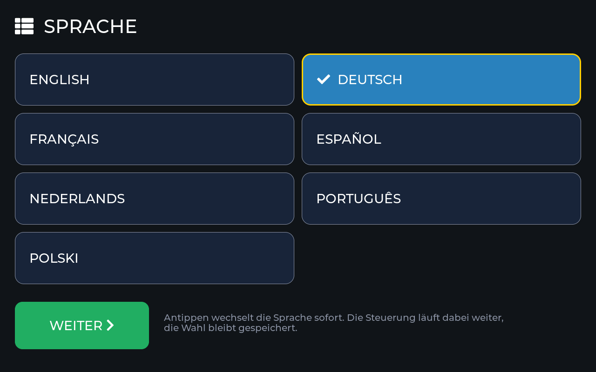
- Sprache antippenZur Wahl stehen English, Deutsch, Français, Español, Nederlands, Português und Polski. Ergebnis: Die Texte wechseln sofort, ohne Neustart. Die Wahl bleibt gespeichert.
- WEITER tippenErgebnis: Die Einrichtung erscheint.
Später änderst du die Sprache über die Taste mit dem Namen der Sprache oben rechts in der Einrichtung (zum Beispiel „DEUTSCH …“). Die Weboberfläche zeigt immer die Sprache des Displays.
4.2 Betriebsart und Windmesser beide
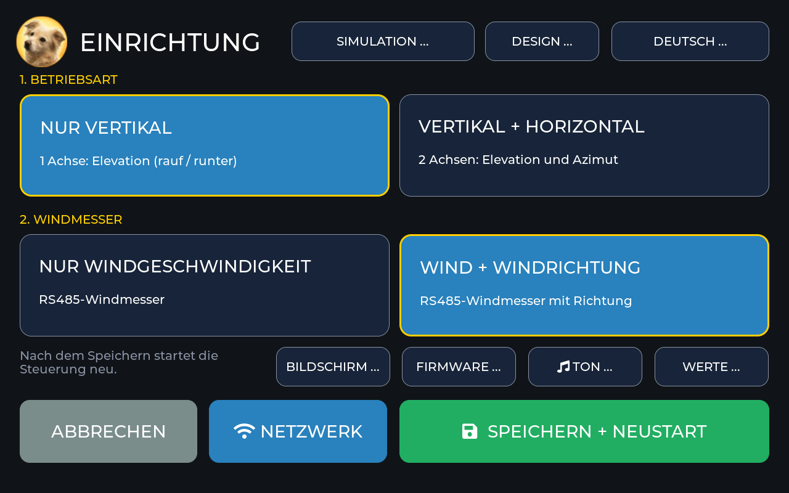
- Betriebsart wählenNUR VERTIKAL (1 Achse: Elevation) oder VERTIKAL + HORIZONTAL (2 Achsen: Elevation und Azimut). Ab Werk ist nichts gewählt. Ergebnis: Die gewählte Taste ist blau mit gelbem Rand.
- Windmesser wählenNUR WINDGESCHWINDIGKEIT oder WIND + WINDRICHTUNG. Beide sind Windmesser mit RS485-Ausgang (Modbus-RTU); andere Ausgänge (Impuls, 0–10 V, 4–20 mA) werden nicht unterstützt. Ergebnis: Die Taste ist markiert.
- SPEICHERN + NEUSTART tippenDie Taste geht erst, wenn beides gewählt ist. Ergebnis: Alle Ausgänge gehen aus, die Steuerung startet neu, danach öffnet sich das Setup-Programm.
1 Achse nur vertikal
Die Ausgänge für den Azimut bleiben immer offen. Am Display fehlen die Tasten OST und WEST; dafür gibt es die Karte NEIGUNG mit festen Winkeln (0°, 30°, 60° und zwei Wunschwinkel). Vom Sonnensensor zählt nur Nord gegen Süd.
2 Achsen vertikal + horizontal
Beide Achsen werden nachgeführt, immer nacheinander. Am Display gibt es STEILER, FLACHER, OST und WEST. Der Sonnensensor wird mit allen vier Seiten ausgewertet. Die Karte NEIGUNG mit festen Winkeln gibt es nicht.
Für das Samba-Solar-Rack sind zwei getrennte Sensoren am selben Bus vorgesehen: Windgeschwindigkeit (Adresse 3) und Windrichtung (Adresse 4), also WIND + WINDRICHTUNG. Die Windrichtung wird nur angezeigt und protokolliert; sie beeinflusst weder Nachführung noch Sturmschutz. Wer nur einen Geschwindigkeitsmesser hat, wählt NUR WINDGESCHWINDIGKEIT.
Betriebsart und Windmesser kannst du jederzeit ändern. Neue Einstellungen gelten erst nach SPEICHERN + NEUSTART; bis dahin arbeitet die Steuerung mit den bisherigen weiter. ABBRECHEN verwirft die Auswahl. Hast du die Betriebsart geändert, prüfe die Anlage danach neu: SETUP-PROGRAMM → ALLES NEU PRÜFEN (Kapitel 5.4).
4.3 Die übrigen Tasten der Einrichtung
| Taste | Wozu | Gilt | Pflicht? |
|---|---|---|---|
| NETZWERK | WLAN, Hotspot, Uhrzeit, Fernzugriff (4.4) | nach SPEICHERN + NEUSTART | freiwillig, für Uhrzeit nötig |
| DESIGN … | Farben der Oberfläche (4.6) | sofort | freiwillig |
| TON … | Bestätigungstöne, Lautstärke (4.7) | sofort | freiwillig |
| BILDSCHIRM … | Ruhezustand, Bewegungsmelder, Akku (4.8) | sofort | freiwillig |
| FIRMWARE … | neue Firmware prüfen und installieren (4.9) | nach Bestätigung | freiwillig |
| WERTE … | alle einstellbaren Werte, Setup-Programm (Kapitel 7); erst nach gespeicherter Einrichtung | je Wert verschieden | – |
| SIMULATION … | Testen ohne Platine RearCircuitBoard_10 (4.10) | nach Rückfrage und Neustart | nur zum Ausprobieren |
| DEUTSCH … (Name der Sprache) | Sprachwahl (4.1) | sofort | – |
4.4 Netzwerk: WLAN, Hotspot und Uhrzeit freiwillig
Das WLAN ist ab Werk aus. Die Steuerung braucht es nie: Nachführung und Sturmschutz arbeiten ohne Netz genauso. Mit WLAN bekommst du aber die genaue Uhrzeit (dann kennt das Gerät Sonnenauf- und -untergang), die Weboberfläche für Handy und PC und die Prüfung auf neue Firmware.
Das Board hat keine eigene, batteriegestützte Uhr. Die Uhrzeit kommt nur über das WLAN von einem Zeitserver. Ohne WLAN erkennt das Gerät die Nacht an der Helligkeit (Kapitel 6).
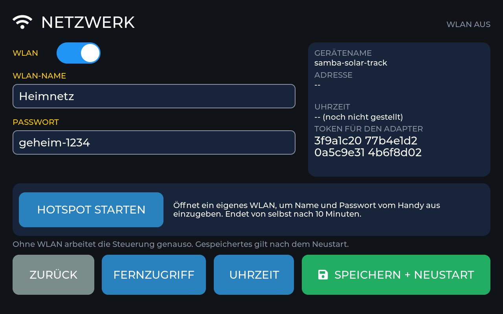
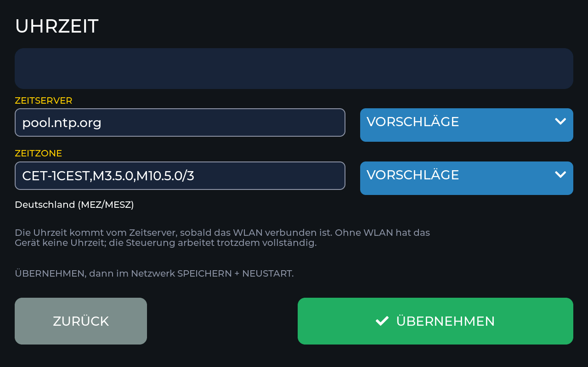
Weg A: am Display eintippen
- Einrichtung → NETZWERKErgebnis: Der Bildschirm NETZWERK erscheint, oben rechts „WLAN AUS“.
- WLAN einschaltenSchalter WLAN antippen. Ergebnis: Der Schalter ist blau.
- WLAN-Name und Passwort eingebenFeld antippen, mit der Bildschirmtastatur tippen, mit dem Haken bestätigen. Der Name hat 1 bis 32 Zeichen, das Passwort ist leer oder hat 8 bis 63 Zeichen. Die Tastatur kennt keine Umlaute; für solche Namen nimm Weg B. Ergebnis: Name und Passwort stehen in den Feldern.
- Uhrzeit prüfenTaste UHRZEIT. Voreinstellung: Zeitserver
pool.ntp.org, Zeitzone Deutschland (MEZ/MESZ). Wohnst du in einer anderen Zeitzone, wähle sie unter VORSCHLÄGE und tippe ÜBERNEHMEN. Ergebnis: Du bist zurück im Bildschirm NETZWERK. - SPEICHERN + NEUSTARTErgebnis: Alle Ausgänge gehen aus, das Gerät startet neu und verbindet sich. In der Kopfzeile erscheint das WLAN-Symbol: weiß = verbunden, gelb = keine Verbindung. Kurz danach steht links daneben die Uhrzeit.
Weg B: über den Einrichtungs-Hotspot (mit dem Handy)
- NETZWERK → HOTSPOT STARTENErgebnis: Das Gerät öffnet ein eigenes WLAN „Samba-Setup-“ mit vier Zeichen. Name und Passwort stehen am Display; das Passwort ist bei jedem Start anders.
- Mit dem Handy dieses WLAN verbinden und im Browser
http://192.168.4.1öffnenErgebnis: Die Einrichtungsseite erscheint (Bild rechts) mit einer Liste der gefundenen WLANs. - WLAN wählen, Passwort und Gerätename eingeben, speichernDer Gerätename besteht aus a–z, 0–9 und Bindestrich, ab Werk
samba-solar-track. Ergebnis: Das Gerät startet nach 1,5 s neu und verbindet sich mit deinem WLAN.
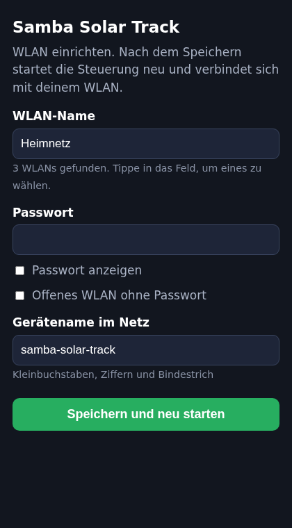
Der Hotspot endet von selbst nach 10 Minuten. Solange er läuft, ruht die Verbindung zum WLAN.
Unter der Adresse, die der Bildschirm NETZWERK zeigt, oder unter http://samba-solar-track.local (bzw. dem Gerätenamen, den du vergeben hast). Klappt die Verbindung nicht, versucht es das Gerät alle 30 Sekunden erneut, ohne Ende.
4.5 Fernzugriff: Handy anmelden, Fernsteuerung sperren freiwillig
- QR-Code: Erscheint, sobald das WLAN verbunden ist. Mit dem Handy scannen; der Browser öffnet die Weboberfläche und ist angemeldet. Ohne Anmeldung kann der Browser nur zusehen.
- Token: Ein geheimer Schlüssel aus 32 Zeichen, den das Gerät selbst erzeugt. Am PC gibst du ihn in der Weboberfläche unter TOKEN EINGEBEN ein; der Bildschirm NETZWERK zeigt ihn in vier Blöcken.
- FERNSTEUERUNG: Gesperrt nimmt das Gerät aus der Ferne keinen Befehl und keine Änderung an; Anzeigen laufen weiter. Sperren, wenn jemand an der Mechanik arbeitet. Gilt sofort.
- TOKEN ERNEUERN: Wenn ein Handy verloren ging. Mit Rückfrage; danach müssen sich alle neu anmelden. Gilt sofort.
4.6 Design freiwillig
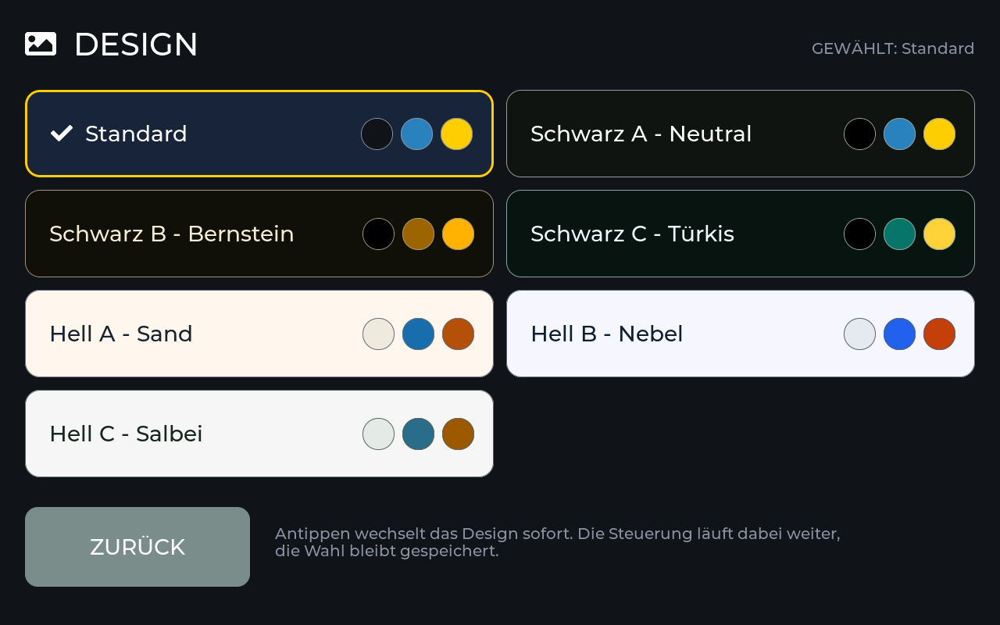
Antippen wechselt das Design sofort, am Display und in der Weboberfläche. Die Steuerung läuft dabei weiter.
4.7 Ton freiwillig
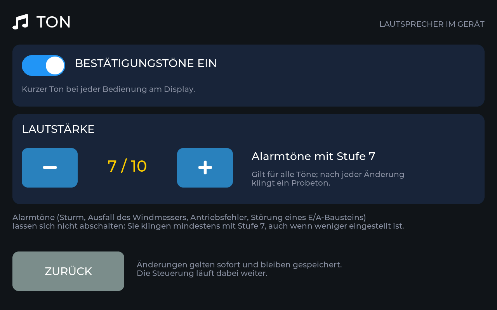
| Einstellung | Voreinstellung | Möglich | Hinweis |
|---|---|---|---|
| Bestätigungstöne | ein | ein / aus | kurzer Ton bei jeder Bedienung am Display |
| Lautstärke | 7 von 10 | 1 bis 10 | nach jeder Änderung klingt ein Probeton |
| Alarmtöne | ein | nur leiser, nie aus | bei Sturm, Ausfall des Windmessers, Antriebsfehler und Störung eines Bausteins; sie klingen immer mindestens mit Stufe 7 |
Änderungen gelten sofort und bleiben gespeichert. Ton gibt es nur am Display einzustellen.
4.8 Bildschirm: Ruhezustand, Bewegungsmelder, Akku freiwillig
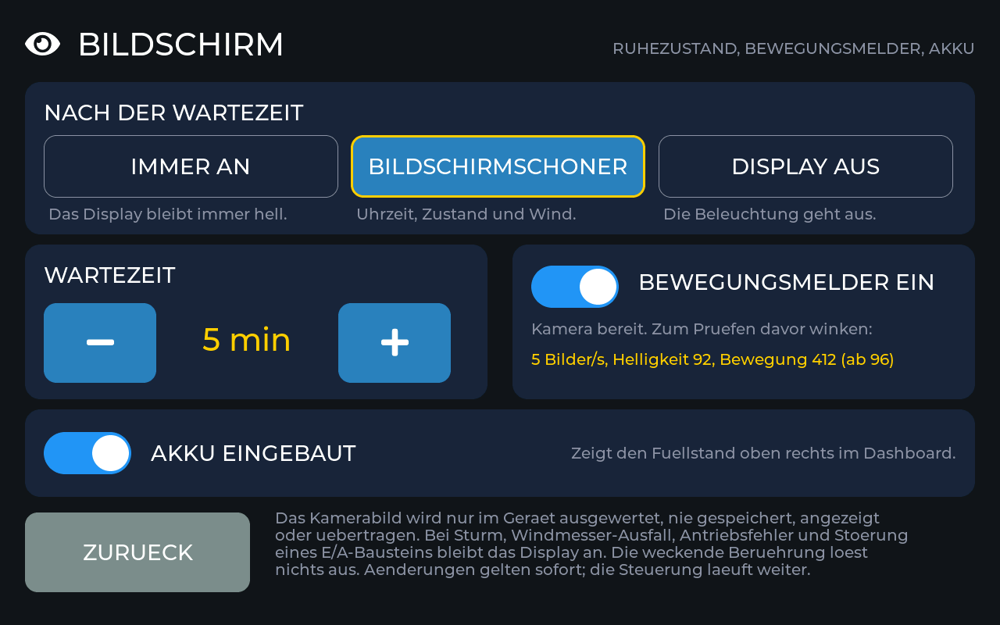
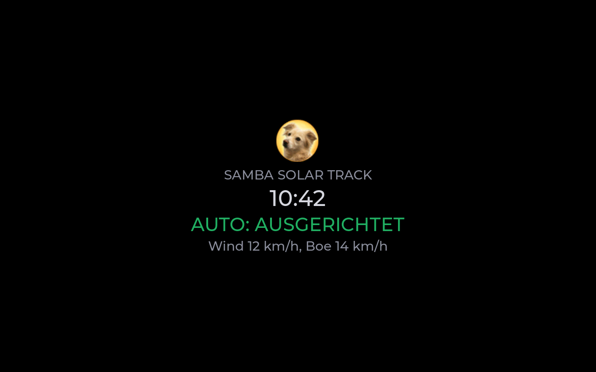
| Einstellung | Voreinstellung | Möglich |
|---|---|---|
| Nach der Wartezeit | BILDSCHIRMSCHONER | IMMER AN · BILDSCHIRMSCHONER · DISPLAY AUS |
| Wartezeit | 5 min | 1 bis 60 min (Tasten − und +) |
| Bewegungsmelder | ein | ein / aus |
| Akku eingebaut | ja | ja / nein (zeigt den Füllstand oben rechts im Dashboard) |
Bewegung vor dem Display oder eine Berührung weckt es; die weckende Berührung löst keine Bedienung aus. Bei Sturm, Ausfall des Windmessers, Antriebsfehler und Störung eines Bausteins geht das Display von selbst an. Das Bild der eingebauten Kamera wird nur im Gerät ausgewertet, nie gespeichert, angezeigt oder übertragen.
Im Bildschirm BILDSCHIRM steht unter dem Schalter eine Zeile mit „Bewegung …“. Wink vor dem Display: Die Zahl muss steigen. Ist es zu dunkel, steht dort „zu dunkel“.
4.9 Firmware freiwillig
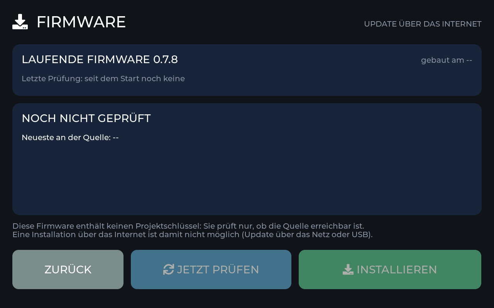
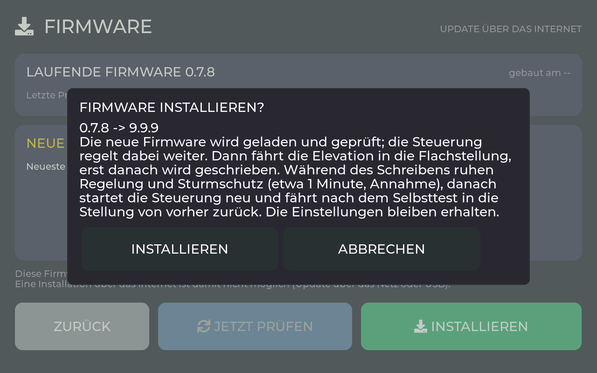
Mit WLAN prüft das Gerät einmal täglich, ob es eine neuere Firmware gibt. Installiert wird nie von selbst, sondern nur, wenn du INSTALLIEREN tippst und die Rückfrage bestätigst. Vor dem Schreiben fährt die Elevation flach; während des Schreibens ruhen Regelung und Sturmschutz kurz. Danach startet das Gerät neu und prüft sich selbst; klappt das nicht, kehrt es zur bisherigen Firmware zurück. Die gespeicherten Einstellungen bleiben erhalten.
4.10 Simulation: ausprobieren ohne Platine
Mit der Simulation lässt sich die Bedienung ohne Platine RearCircuitBoard_10, ohne Antriebe und ohne Sensoren ausprobieren, zum Beispiel am Schreibtisch. Einschalten geht nur, wenn die Platine nicht aufgesteckt ist, und braucht eine Rückfrage. Das Display zeigt die Simulation dauerhaft an. Steckt die Platine beim Start, schaltet sich eine gespeicherte Simulation von selbst ab. Auch das Setup-Programm lässt sich in der Simulation durchspielen; sein Prüfbericht ist dann als „SIMULATION“ markiert.
Ein Setup-Programm, das nur in der Simulation abgeschlossen wurde, gilt am echten Rack nicht. Startet das Gerät zum ersten Mal mit aufgesteckter Platine, beginnt das Setup-Programm von selbst wieder bei Schritt 1. Bis es am echten Rack bestanden ist, bleibt die Automatik gesperrt (violettes Band „SETUP-PROGRAMM FEHLT“); Sturmschutz und Parken wirken weiter. Du musst dafür nichts tun, außer das Setup-Programm am Rack durchzugehen (Kapitel 5).
5Das Setup-Programm
Das Setup-Programm prüft einmal am fertigen Rack alles, was für einen sicheren Betrieb zählt: Platine, Windmesser, Fahrrichtungen, Fahrwege, Sonnensensor und die Automatik. Wo ein Mensch urteilen muss, fragt es nach. Wo das Gerät selbst messen kann, misst es. Erst wenn alle Pflichtschritte bestanden sind, führt die Anlage von selbst nach.
Das Setup-Programm ist in Firmware 0.7.0 umgesetzt und mit automatischen Tests und in der Simulation geprüft, aber noch nie an einem echten Rack gelaufen. Grenzwerte für Fahrzeiten, Hall-Schritte und Winkel gibt es noch nicht (Entscheidung E-S3): „bestanden“ heißt Endlage erreicht bzw. von dir bestätigt; die Messwerte landen im Prüfbericht.
5.1 Bevor du beginnst
- Wenig Wind. Bei Sturm bricht jeder Fahrtest ab, und das Rack fährt flach.
- Tageslicht oder eine helle Lampe. Sonnensensor und Probelauf brauchen Licht (mindestens die Tag-Schwelle, ab Werk Summe 6000).
- Zwei Personen sind besser als eine. Eine steht am Display, die andere schaut auf das Rack. Steht das Display weit weg, nimm ein Telefon zum Absprechen.
- Freie Sicht auf das Rack und auf den Windmesser; eine Leiter für den Windmesser, falls er hoch sitzt (nur bei abgeschaltetem Netzteil am Rack hinaufsteigen, wenn du dabei in den Schwenkbereich kommst).
- Ein Handy mit Neigungsmesser-App (Wasserwaage) für Schritt „Winkel anfahren“ 1 Achse und ein Kompass (auch als App) für den Standort.
So öffnet es sich
- Nach dem Speichern der Einrichtung öffnet es sich von selbst.
- Verlässt du es (SPÄTER WEITERMACHEN), zeigt das Dashboard unten das violette Band „SETUP-PROGRAMM FEHLT: AUTOMATIK GESPERRT – HIER TIPPEN ZUM FORTSETZEN“. Antippen öffnet es wieder an derselben Stelle.
- Außerdem über das Zahnrad → WERTE → INBETRIEBNAHME → grüne Zeile SETUP-PROGRAMM (ALLES PRÜFEN).
- Der Stand bleibt gespeichert, auch über einen Neustart oder Stromausfall hinweg.
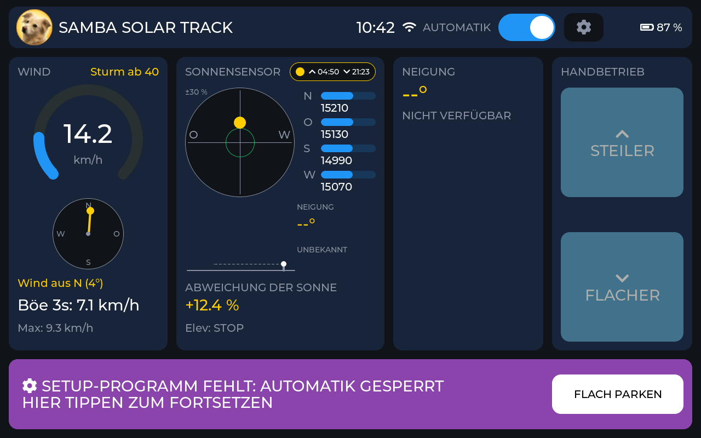
Die Tasten unten
| Taste | Was sie tut |
|---|---|
| SPÄTER WEITERMACHEN | Verlässt das Setup-Programm. Jede Fahrt stoppt, der Stand bleibt. Die Automatik bleibt gesperrt. |
| SCHRITT ZURÜCK | Geht zum vorigen Schritt (nicht im ersten Schritt und nicht nach dem Abschluss). |
| ÜBERSPRINGEN | Nur bei freiwilligen Schritten: WLAN und Uhrzeit, Standort, Leuchten/Ton/Bewegungsmelder. Fahr- und Sicherheitsschritte lassen sich nie überspringen. |
| STOPP (rot) | Erscheint bei jeder Fahrt. Hält sofort an. |
| WIEDERHOLEN | Nach einem Abbruch oder einer Berichtigung: den Schritt noch einmal machen. |
Endschalter, Höchstlaufzeit, Totzeit und Einschaltdauer wirken auch im Setup-Programm. Die Antriebe halten trotzdem nicht an, wenn eine Hand dazwischen ist. Niemand im Schwenkbereich, auch keine Tiere. Kommt Sturm, bricht der Schritt ab, und das Rack fährt flach (Bild unten).
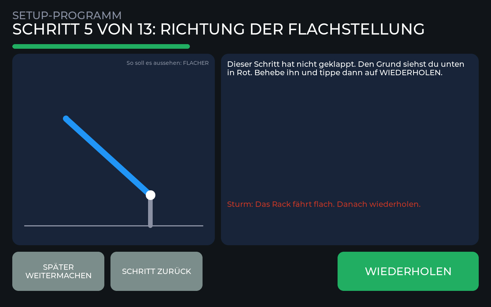
5.2 Die Schritte im Überblick
| Nr. | Schritt | 1 Achse | 2 Achsen | Bewegt das Rack? |
|---|---|---|---|---|
| 1 | Sicherheit | ✓ | ✓ | nein |
| 2 | Daten der Anlage | ✓ | ✓ | nein |
| 3 | Platine und Versorgung | ✓ | ✓ | nein |
| 4 | Windmesser | ✓ | ✓ | nein |
| 5 | Richtung der Flachstellung | ✓ | ✓ | ja: kurz, dann ganz flach |
| 6 | Fahrweg der Neigung | FAHRZEIT EINMESSEN | ganz steil und zurück | ja: ganzer Weg |
| 7 | Drehung Ost – West | – | ✓ | ja: ganzer Weg |
| (+1) | Reset der Synchronsteuerung | nur, wenn unter „Daten der Anlage“ ein Reset-Anschluss gewählt ist | ja: ganz flach | |
| 7 | Winkel anfahren | ✓ | – | ja: auf 30° |
| 8 | Sonnensensor | Süd, Nord | Ost, West, Süd, Nord | nein |
| 9 | WLAN und Uhrzeit freiwillig | ✓ | ✓ | nein |
| 10 | Standort freiwillig | mit Ausrichtung | ohne Ausrichtung | nein |
| 11 | Leuchten, Ton, Bewegungsmelder freiwillig | ✓ | ✓ | nein |
| 12 | Probelauf der Automatik | Neigung | Neigung, dann Drehung | ja: ein Stück |
| 13 | Fertig | ✓ | ✓ | nein |
Beide Betriebsarten haben 13 Schritte: Bei 2 Achsen kommt „Drehung Ost – West“ dazu, bei 1 Achse „Winkel anfahren“. Ist ein Reset der Synchronsteuerung eingestellt (zum Beispiel beim Samba-Solar-Rack mit BST-KZQ-15A-2), sind es 14, und ab diesem Schritt verschieben sich die Nummern um eins. Die Kopfzeile zeigt immer „SCHRITT n VON m“.
5.3 Schritt für Schritt
1Sicherheit beide
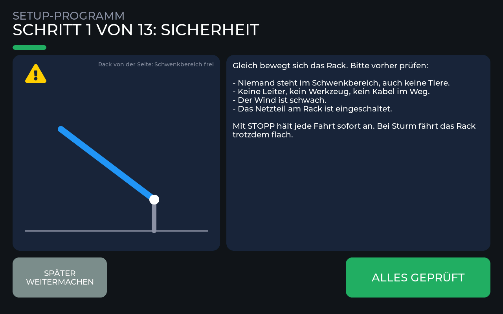
„Gleich bewegt sich das Rack. Bitte vorher prüfen“ mit vier Punkten und der Taste ALLES GEPRÜFT.
- Niemand im Schwenkbereich, auch keine Tiere.
- Keine Leiter, kein Werkzeug, kein Kabel im Weg.
- Der Wind ist schwach.
- Das Netzteil am Rack ist eingeschaltet.
Dann ALLES GEPRÜFT.
Schritt 2 erscheint.
Erst alles in Ordnung bringen. Dieser Schritt lässt sich nicht überspringen.
2Daten der Anlage beide
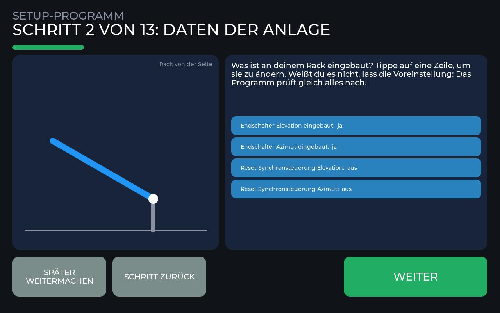
Blaue Zeilen mit dem, was an deinem Rack eingebaut ist, jeweils mit dem aktuellen Wert.
Jede Zeile antippen, bis der richtige Wert dasteht (jedes Tippen schaltet weiter). Was die Werte bedeuten und was für dein Rack richtig ist: Endschalter, Hall-Abgriff, Gestell, Reset. Dann WEITER.
Die Zeilen zeigen deine Werte. Schritt 3 erscheint.
Weißt du es nicht, lass die Voreinstellung. Die folgenden Schritte prüfen nach.
Samba-Solar-Rack 2.0-E Plus
Endschalter Elevation: nein · Hall-Abgriff: ja, wenn das HallTapBoard eingebaut ist · Gestell: G2 · Reset Synchronsteuerung Elevation: J23 (Platine ab Entwurf 0.12, Synchronsteuerung BST-KZQ-15A-2).
Anderes Rack
Endschalter: ja nur, wenn eigene Endschalter am Ende des Fahrwegs an der Platine angeschlossen sind. Gestell: linear. Reset: aus, außer deine Synchronsteuerung hat einen Reset-Eingang und er ist angeschlossen.
3Platine und Versorgung beide
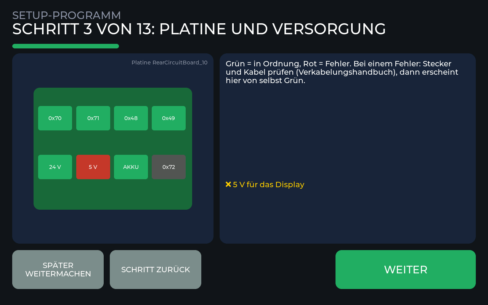
Erst eine Erklärung mit PRÜFEN, dann ein Bild der Platine mit acht Feldern.
PRÜFEN tippen, kurz warten.
Alle Felder grün oder grau, rechts „Alles in Ordnung“. Dann WEITER.
Rotes Feld: Stecker und Kabel prüfen (Verkabelungshandbuch). Das Feld wird von selbst grün, sobald der Fehler weg ist. WEITER geht erst dann.
| Feld | Was geprüft wird | Rot heißt |
|---|---|---|
| 0x70 | Baustein der Schaltausgänge und Endschalter | Platine steckt nicht richtig oder ist gestört; ohne ihn fährt nichts |
| 0x71 | Baustein der Meldeleuchten | Leuchten und Überwachung der Versorgung gestört |
| 0x48 | Messung des Sonnensensors | Baustein gestört oder Versorgung des Sonnensensors überlastet (Kurzschluss im Kabel?) |
| 0x49 | Messung der Versorgung | zweiter Messbaustein antwortet nicht |
| 24 V | 24 V vom Netzteil | Netzteil der Steuerung aus oder Sicherung |
| 5 V | 5 V für das Display | Spannungswandler der Platine liefert nicht |
| AKKU | Ladesperre des Akkus und Versorgung des Sensors | Ladesperre unplausibel (siehe Handbuch für Aufbau und Bedienung, Kapitel 7) |
| 0x72 | Baustein der Reset-Kontakte (Klemme J23) | grau, wenn kein Reset an J23 gewählt ist; rot, wenn er gewählt ist, aber nicht antwortet (Platine vor Entwurf 0.12?) |
4Windmesser beide
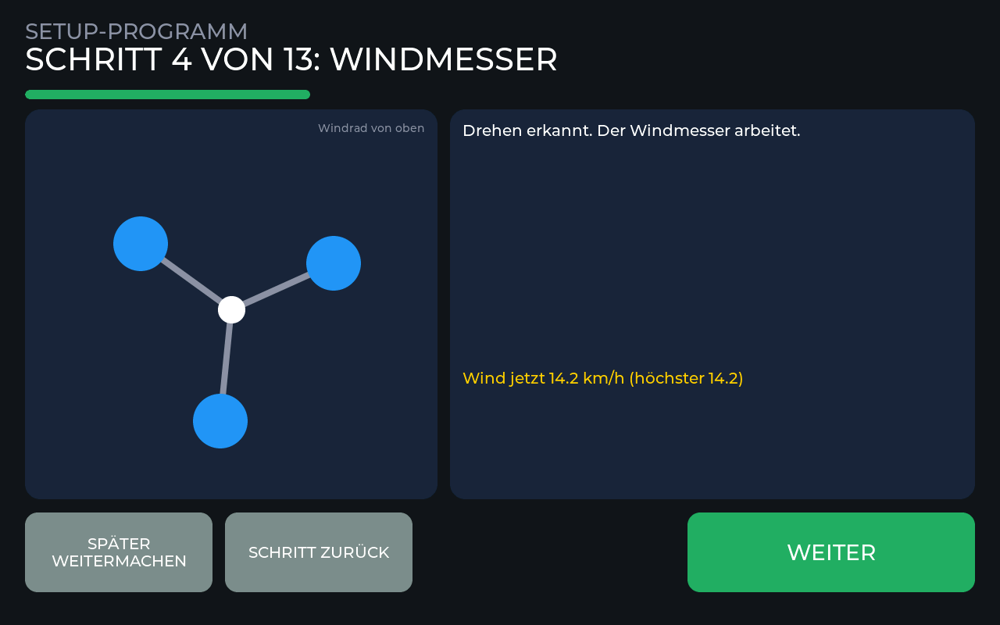
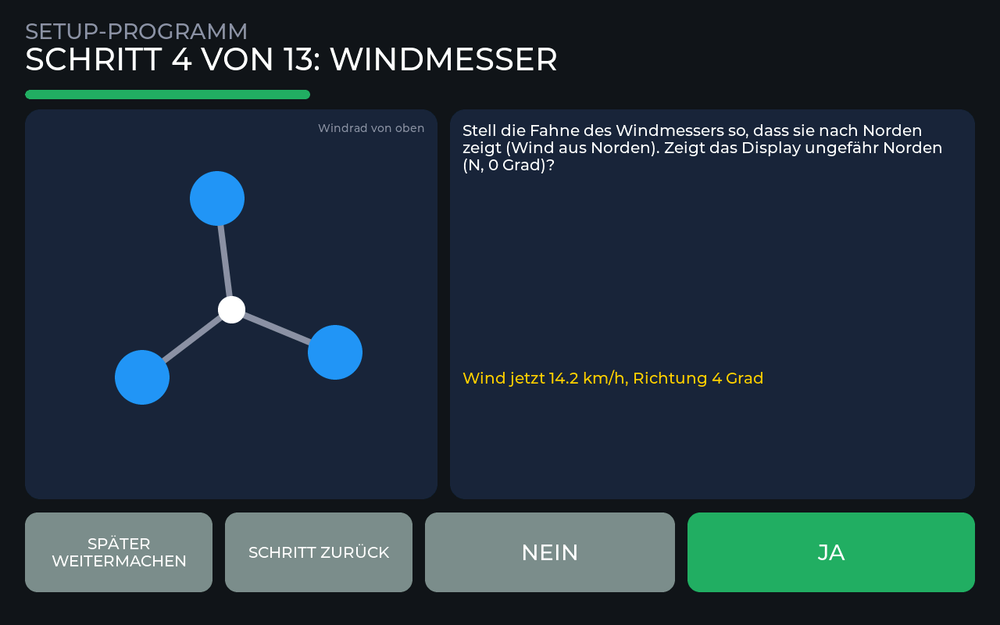
Ein Windrad von oben; unten rechts in Gelb „Wind jetzt … km/h (höchster …)“.
- START tippen.
- Das Windrad mit der Hand kräftig drehen.
- WEITER.
- Nur mit Windrichtung: die Fahne nach Norden stellen und schauen, ob das Display etwa N (0°) zeigt; JA oder NEIN.
Die Anzeige steigt beim Drehen um mindestens 2 km/h, der Text wechselt zu „Drehen erkannt“. Die Richtung zeigt etwa Norden.
„Das Windrad wurde noch nicht gedreht“: kräftiger drehen. Keine Zahl: Der Windmesser antwortet nicht; Verkabelung und Daten des Windmessers prüfen. Richtung falsch (NEIN): Einbau und Nordmarke des Windmessers prüfen, dann WIEDERHOLEN.
5Richtung der Flachstellung beide
Der wichtigste Schritt: Er legt fest, wohin das Rack bei Sturm fährt (Kapitel 3).
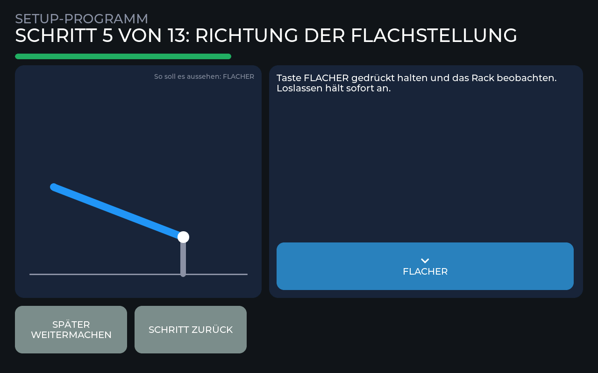
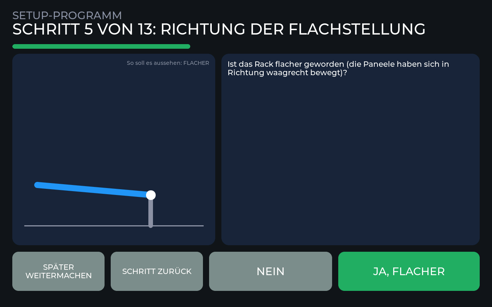
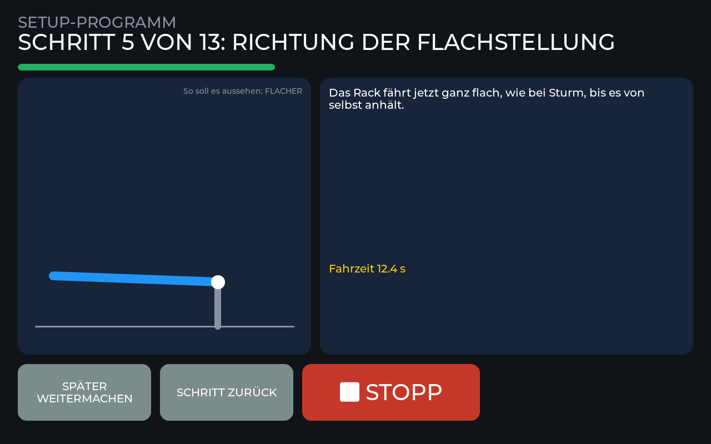
Links eine Skizze „So soll es aussehen: FLACHER“, rechts die Anleitung und eine große Taste FLACHER.
- WEITER.
- FLACHER gedrückt halten und das Rack beobachten. Loslassen hält sofort an; nach 5 s hält es von selbst an.
- JA, FLACHER, wenn die Paneele sich Richtung waagrecht bewegt haben, sonst NEIN.
- Zuschauen, bis das Rack von selbst anhält.
Das Rack wird flacher und fährt dann bis zur Endlage. „Die Flachstellung ist geprüft. Ab jetzt schützt der Sturmschutz das Rack sicher.“
Bei NEIN stellt das Gerät die Richtung selbst um (Wert „Flachstellung liegt Richtung RAUF“): „Gut, dass wir das prüfen“, dann WIEDERHOLEN. Hat sich gar nichts bewegt: Netzteil am Rack, Verkabelung der Kontakte, Synchronsteuerung (Tastbetrieb?) prüfen. Steht das Rack schon ganz flach, fragt das Gerät sofort, ob es flach steht.
Ist „Endschalter Elevation eingebaut“ auf nein, wartet die Steuerung die ganze Höchstlaufzeit ab, auch wenn das Rack schon steht (Laufzeit-Endlage). Beim Samba-Solar-Rack sind das 90 s. Mit Hall-Abgriff endet die Fahrt etwa 1 s nach dem Stillstand der Impulse.
6Fahrweg der Neigung
1 Achse FAHRZEIT EINMESSEN
Das Gerät misst, wie lange das Rack von ganz flach bis ganz steil und zurück braucht. Daraus kennt es später jeden Winkel. Tippe auf FAHRZEIT EINMESSEN; ein eigener Bildschirm führt in vier Schritten (Bilder unten). Danach kommst du zurück und tippst WEITER.
2 Achsen ganz steil und zurück
START: Das Rack fährt ganz steil bis zum Anschlag, dann ganz flach bis zum Anschlag. Das Gerät misst beide Zeiten. Danach fragt es, ob das Rack ganz steil und wieder ganz flach gefahren ist, ohne zu haken oder anzustoßen.
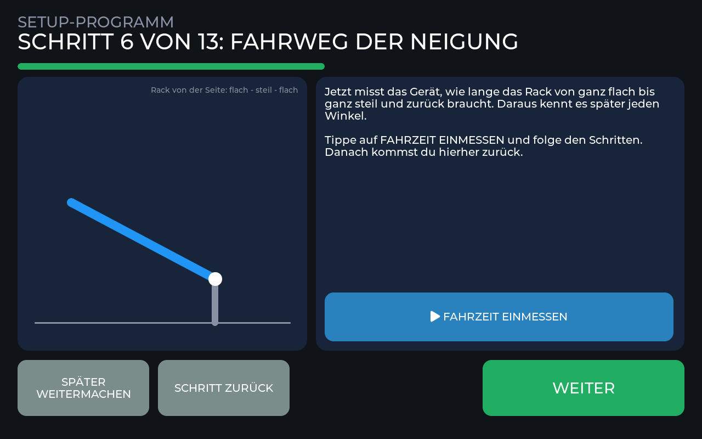
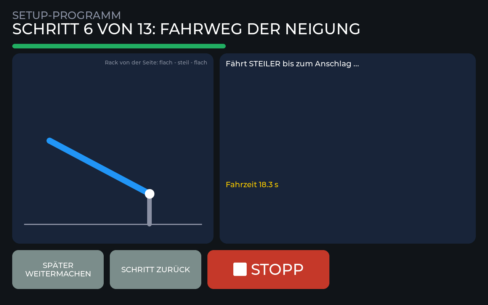
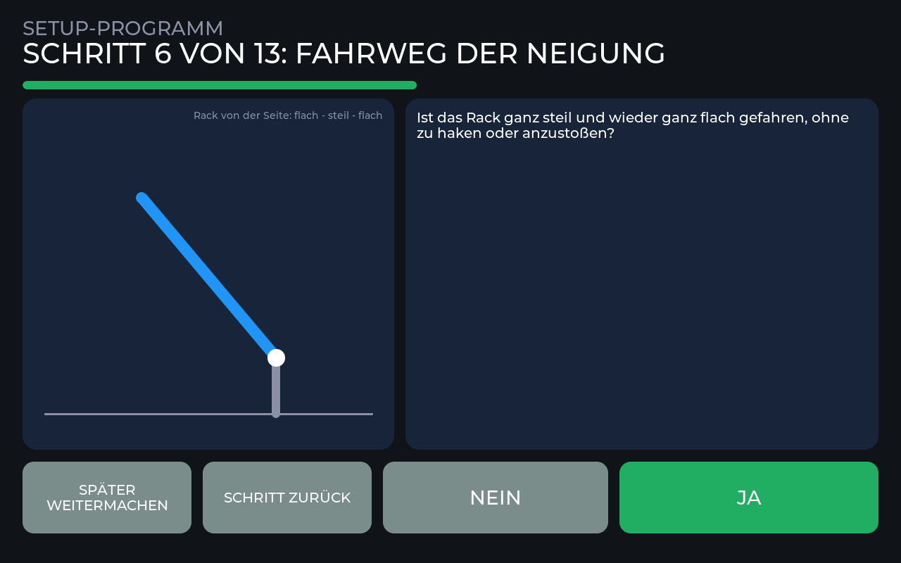
1 Achse Die vier Schritte von FAHRZEIT EINMESSEN
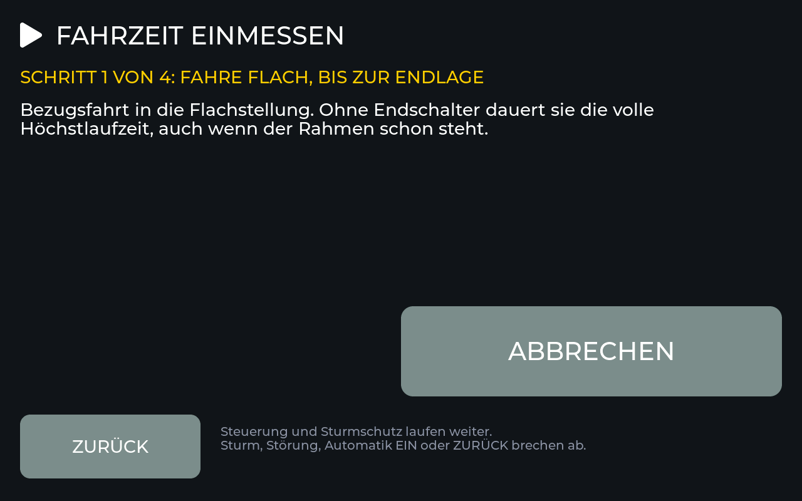
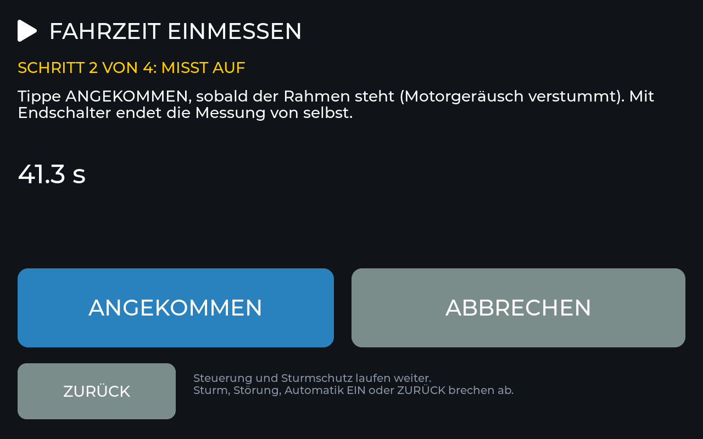
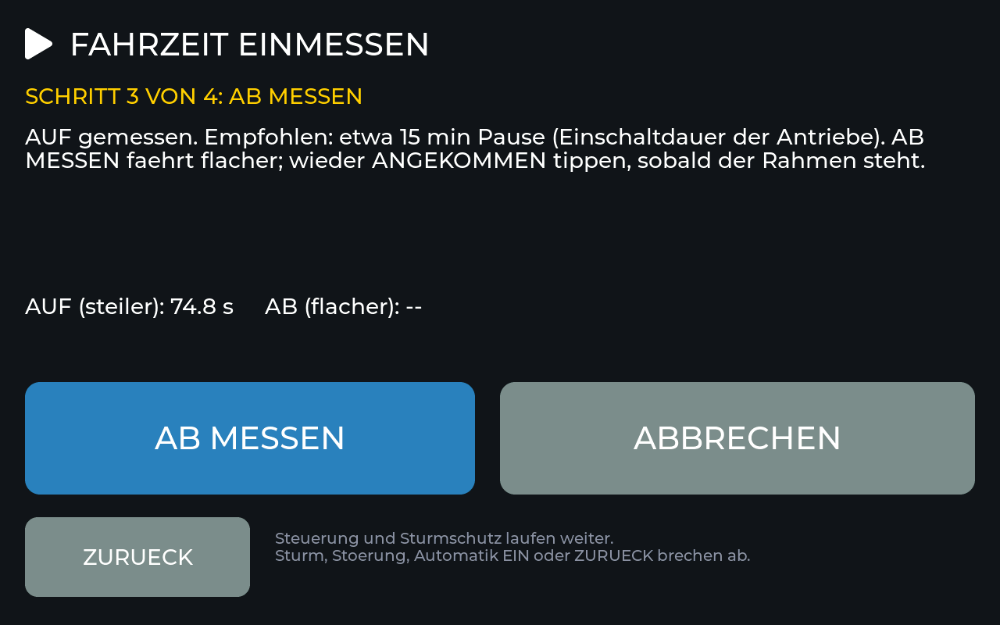
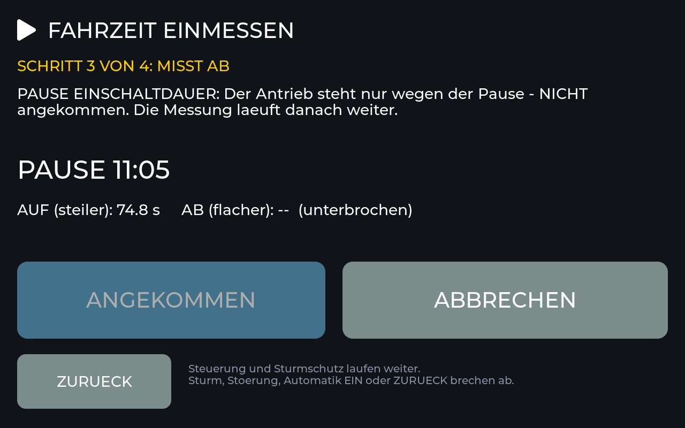
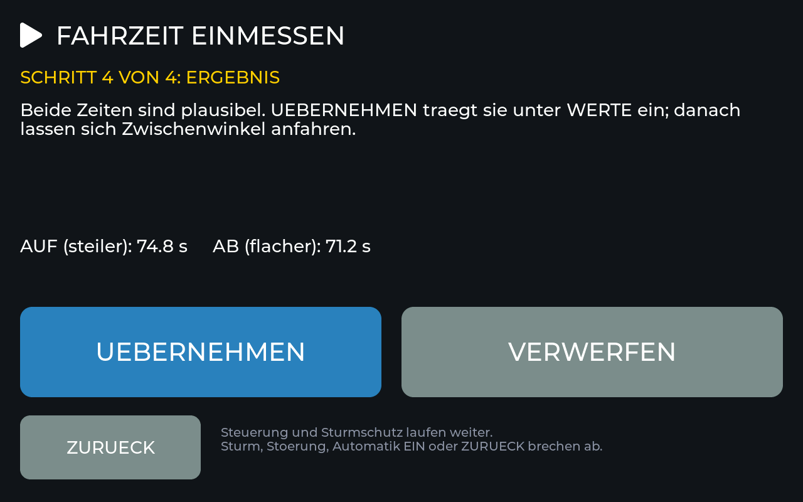
1 Achse die Taste FAHRZEIT EINMESSEN. 2 Achsen die laufende Fahrzeit, dann die Frage.
1 Achse FAHRZEIT EINMESSEN durchlaufen, ÜBERNEHMEN, zurück, WEITER. 2 Achsen START, zuschauen, JA oder NEIN.
Das Rack erreicht beide Endlagen ohne Haken und Anstoßen. 1 Achse „Beide Zeiten sind plausibel“: jede mindestens 10 s, kürzer als 0,9 × Höchstlaufzeit, AUF und AB höchstens im Verhältnis 1 : 2.
„Die Fahrzeit ist noch nicht eingemessen“: erst einmessen. Abbruch „HÖCHSTLAUFZEIT ZU KURZ ODER ANGEKOMMEN NICHT GETIPPT“: Höchstlaufzeit erhöhen. NEIN bei 2 Achsen: Mechanik und Antrieb prüfen (Montagehandbuch des Racks), dann WIEDERHOLEN.
Ist „Hall-Abgriff vorhanden“ auf ja, heißt die Zeile „EINMESSEN: FAHRZEIT UND HALL-SCHRITTE“. Die Messfahrten enden dann von selbst und zählen die Hall-Schritte; plausibel sind je mindestens 1000 Schritte, AUF und AB höchstens 3 % auseinander. Lautet die Ablehnung „HALL ZÄHLT RÜCKWÄRTS“, stelle „Hall-Zählrichtung umkehren“ auf ja.
7Drehung Ost – West 2 Achsen
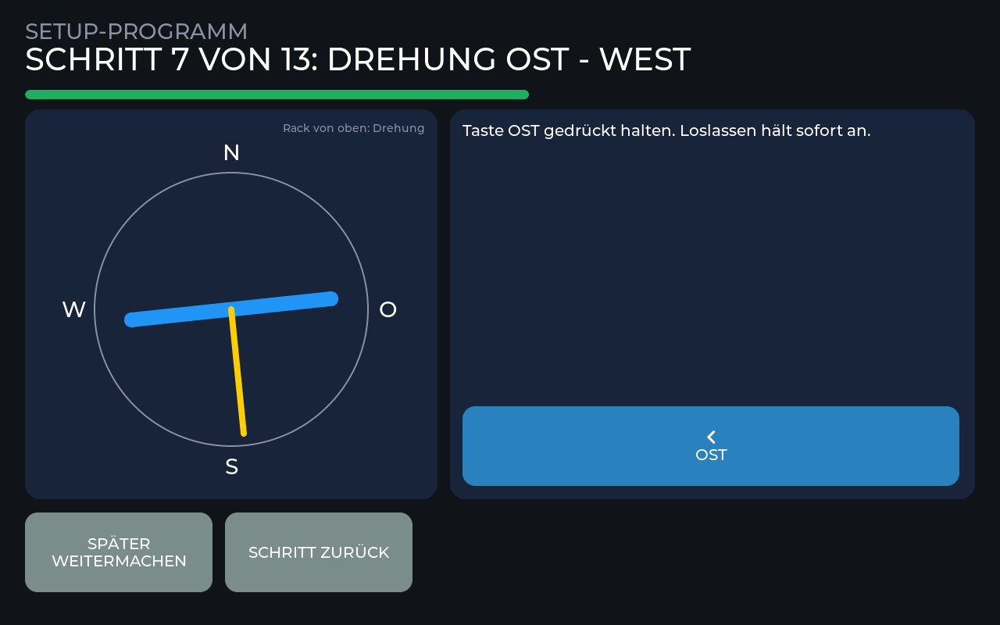
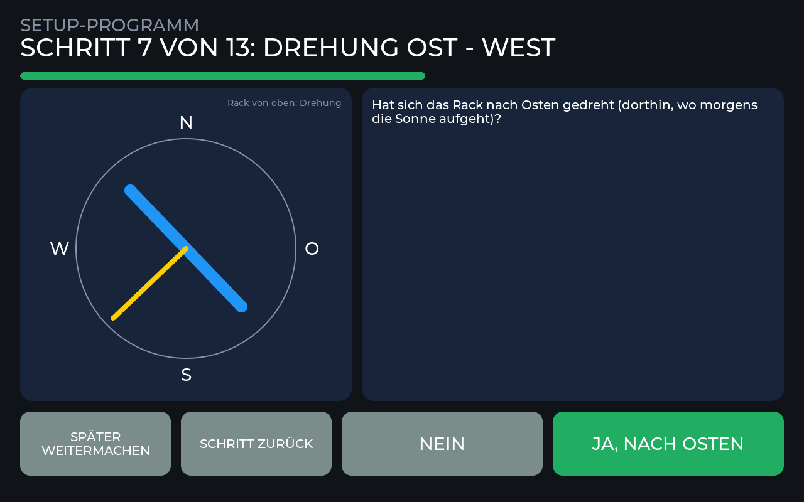
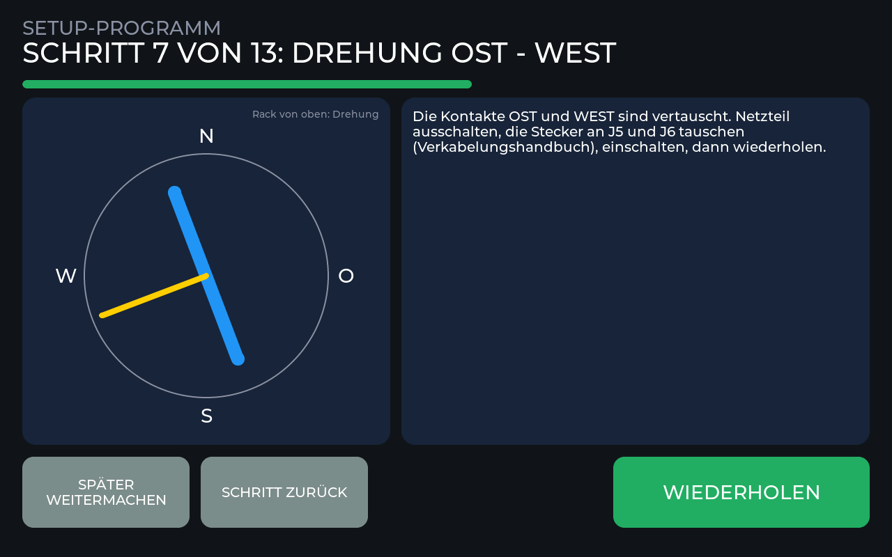
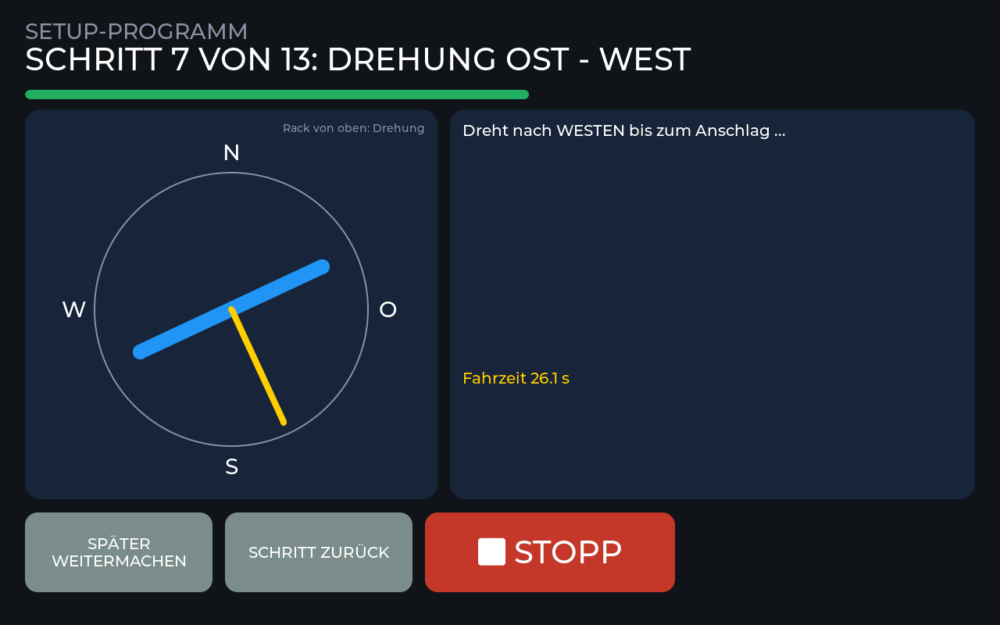
Links eine Draufsicht mit Kompass (gelb: Blickrichtung), rechts die Anleitung und die Taste OST.
- WEITER, dann OST gedrückt halten (höchstens 5 s).
- JA, NACH OSTEN, wenn sich das Rack zur Morgensonne gedreht hat.
- Zuschauen: Das Rack dreht ganz nach Osten, ganz nach Westen und zurück nach Osten.
Alle drei Fahrten erreichen ihren Anschlag. „Drehung geprüft. Das Rack steht in der Morgenstellung.“
NEIN: Das lässt sich nicht per Einstellung umstellen. Netzteil ausschalten, die Stecker an J5 und J6 tauschen (Verkabelungshandbuch), einschalten, WIEDERHOLEN. Keine Bewegung: Netzteil und Verkabelung des Azimut-Antriebs prüfen.
+Reset der Synchronsteuerung nur wenn eingestellt
Diesen Schritt gibt es nur, wenn in Schritt 2 ein Reset-Anschluss gewählt ist. Er kommt nach dem Fahrweg (bei 2 Achsen nach der Drehung). Für ihn gibt es noch kein eigenes Bild; den Ablauf zeigt das Band im Dashboard wie beim Reset über WERTE.
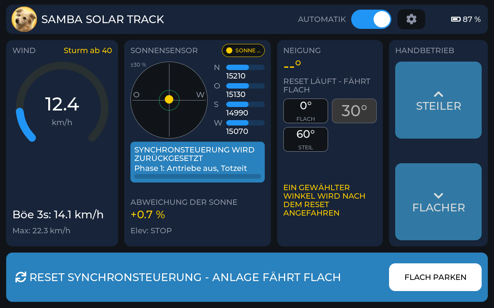
„Die Synchronsteuerung der Antriebe hat einen Reset-Eingang. Gleich löst das Gerät ihn aus.“ und die Taste RESET AUSLÖSEN.
RESET AUSLÖSEN, zuschauen. Bei 2 Achsen mit zwei Resets laufen beide nacheinander.
Die Synchronsteuerung fährt die Antriebe ganz ein (beim Rack: flach). „Reset geprüft.“
„Reset nicht möglich (Anschluss oder Baustein prüfen)“: Es hat innerhalb von 20 s nicht begonnen; Klemme J23 bzw. J5 und Wert Reset prüfen. „Reset abgebrochen“: Ursache steht im Statusband; danach WIEDERHOLEN.
Die Dauer des Reset-Impulses (5 s) und das Verhalten der Synchronsteuerung danach sind am Rack noch nicht gemessen.
7Winkel anfahren 1 Achse
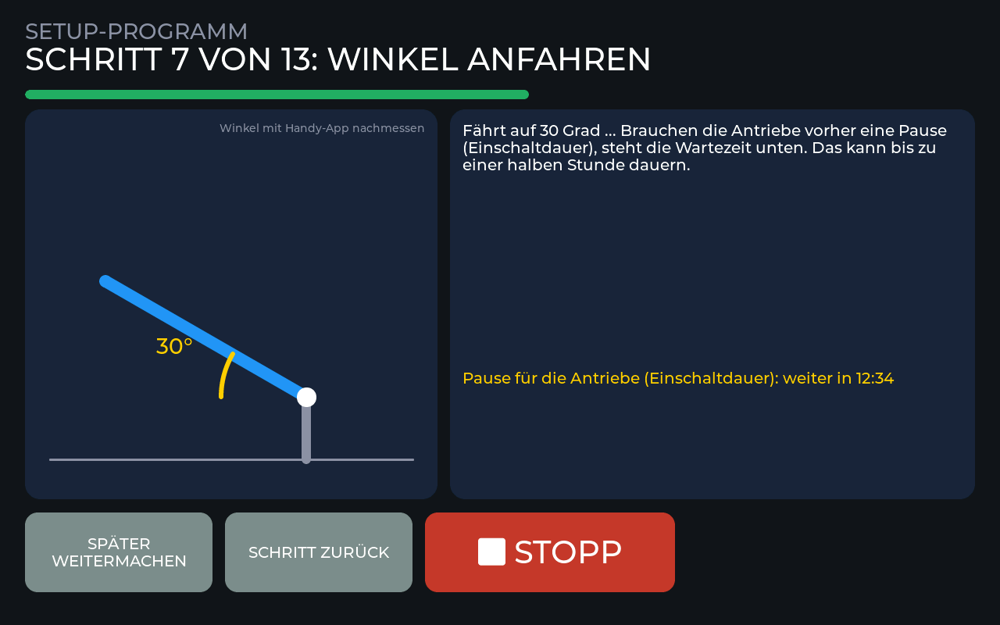
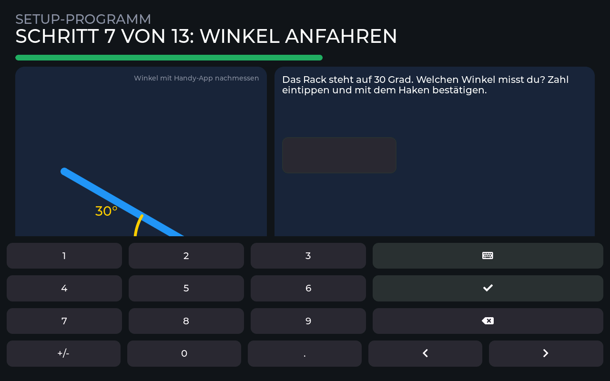
„Jetzt fährt das Rack auf 30 Grad.“ und die Taste AUF 30 GRAD FAHREN.
Taste tippen, warten. Dann das Handy flach auf ein Paneel legen, den Winkel ablesen, eintippen (0 bis 90), Haken.
Das Rack hält bei etwa 30°. „Winkel festgehalten. Er steht im Prüfbericht.“
„Winkel nicht anfahrbar (Fahrzeit oder Hall-Abgriff)“: Schritt 6 wiederholen. Weicht dein Wert stark ab: Gestell prüfen. Eine Grenze, ab der der Schritt scheitert, gibt es noch nicht.
8Sonnensensor
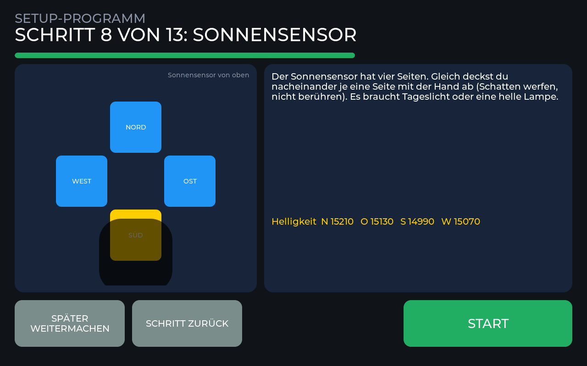
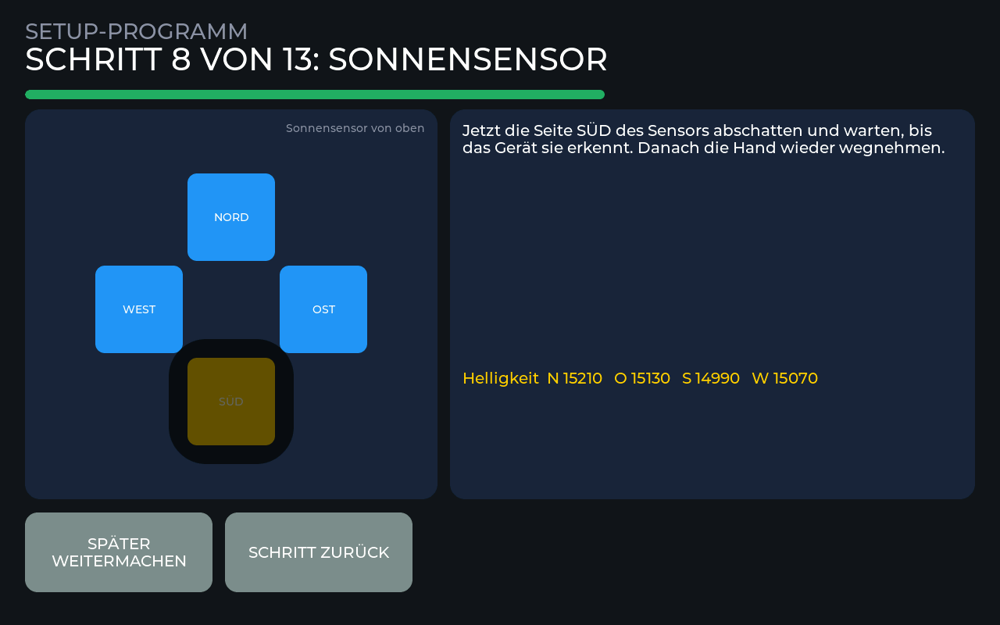
Den Sensor von oben mit vier Feldern. Die Seite, die du abschatten sollst, ist markiert.
START. Dann die genannte Seite abschatten, warten, bis das Gerät sie erkennt, Hand wegnehmen. 1 Achse SÜD, dann NORD. 2 Achsen OST, WEST, SÜD, NORD.
Jede Seite wird mindestens 25 % dunkler und 1 s lang erkannt. „Alle Seiten des Sensors sind richtig zugeordnet.“
Erkennt das Gerät eine andere Seite, berichtigt es die Zuordnung der Eingänge selbst und zählt das im Prüfbericht. „Zu dunkel“: bei Tageslicht oder mit heller Lampe wiederholen. Nichts wird erkannt: Schatten größer machen, näher an den Sensor.
9WLAN und Uhrzeit freiwillig
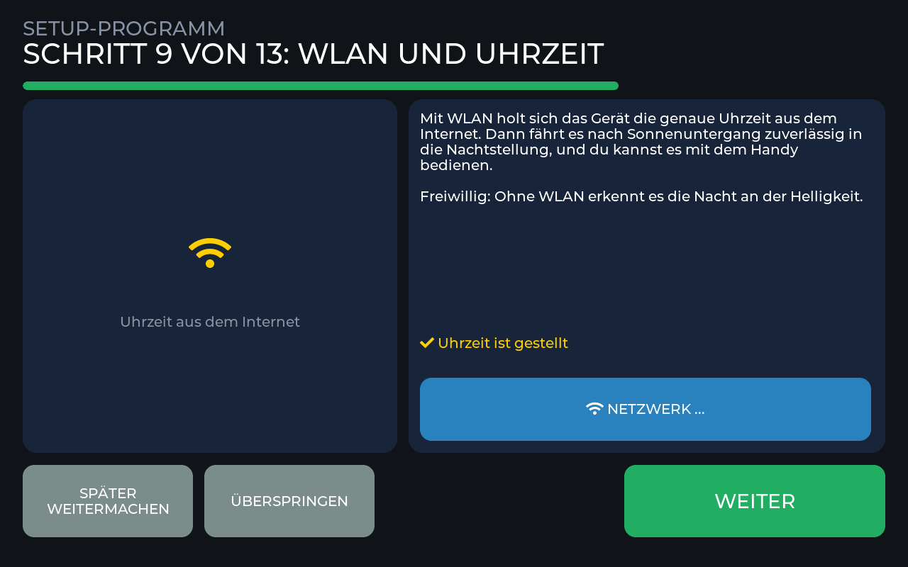
Eine Erklärung, die Taste NETZWERK … und WEITER.
NETZWERK … öffnet den Bildschirm aus Kapitel 4.4. Nach dem Neustart öffnet sich das Setup-Programm wieder an dieser Stelle. Oder ÜBERSPRINGEN.
„Uhrzeit ist gestellt“, dann WEITER.
„Noch keine Uhrzeit: WLAN einrichten oder überspringen.“ Ohne WLAN erkennt das Gerät die Nacht an der Helligkeit.
10Standort freiwillig
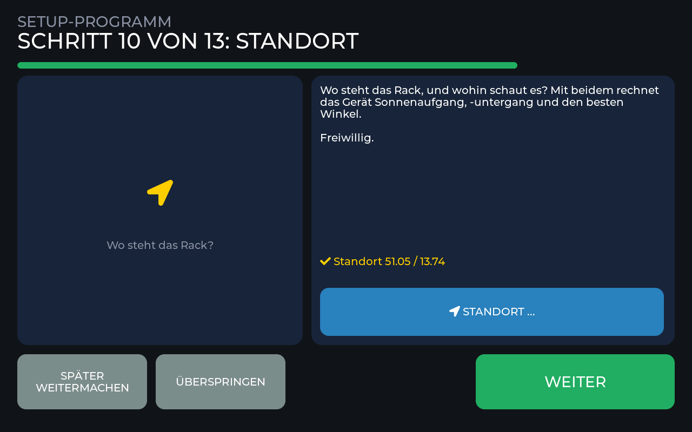
1 Achse „Wo steht das Rack, und wohin schaut es?“ 2 Achsen „Wo steht das Rack?“ und die Taste STANDORT ….
STANDORT … öffnet die Karte (Kapitel 6.2); bei 1 Achse danach auch die Ausrichtung. Oder ÜBERSPRINGEN.
Unten „Standort …“ mit Breite und Länge, dann WEITER.
„Noch kein Standort: eingeben oder überspringen.“
11Leuchten, Ton, Bewegungsmelder freiwillig
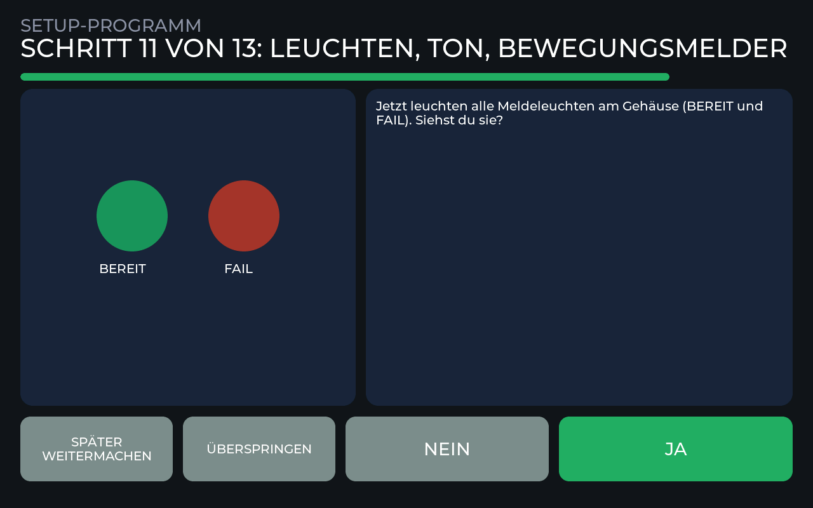
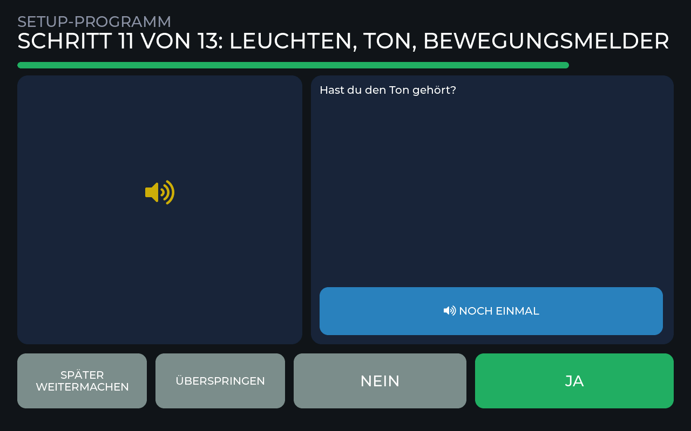
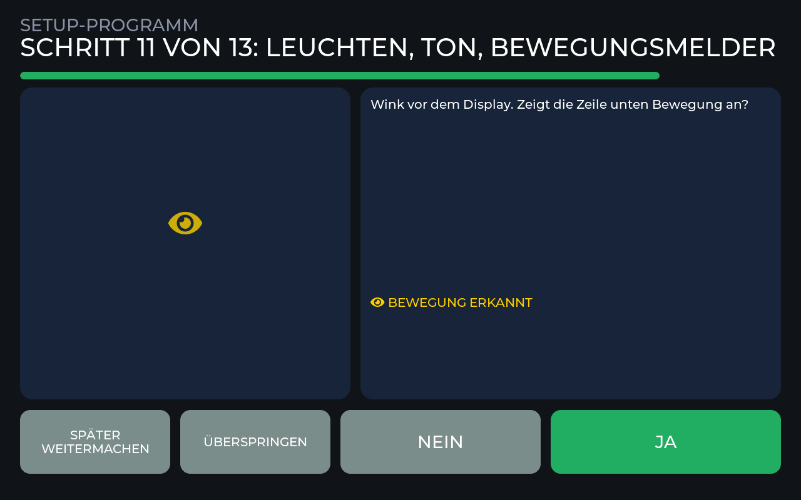
Drei Fragen nacheinander: Leuchten, Ton, Bewegungsmelder.
START, dann jeweils JA oder NEIN. Oder ÜBERSPRINGEN.
BEREIT und FAIL leuchten am Gehäuse und auf der Platine; der Ton ist zu hören; beim Winken steht „BEWEGUNG ERKANNT“.
NEIN wird im Prüfbericht vermerkt, der Schritt geht trotzdem weiter. Leuchten: Anschluss der Gehäuseleuchten prüfen (Verkabelungshandbuch). Ton: Lautstärke. Bewegung: genug Licht vor dem Display?
12Probelauf der Automatik
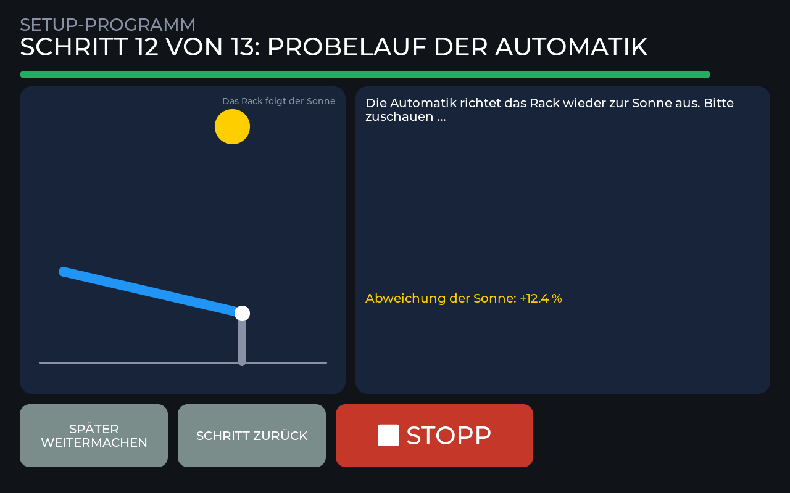
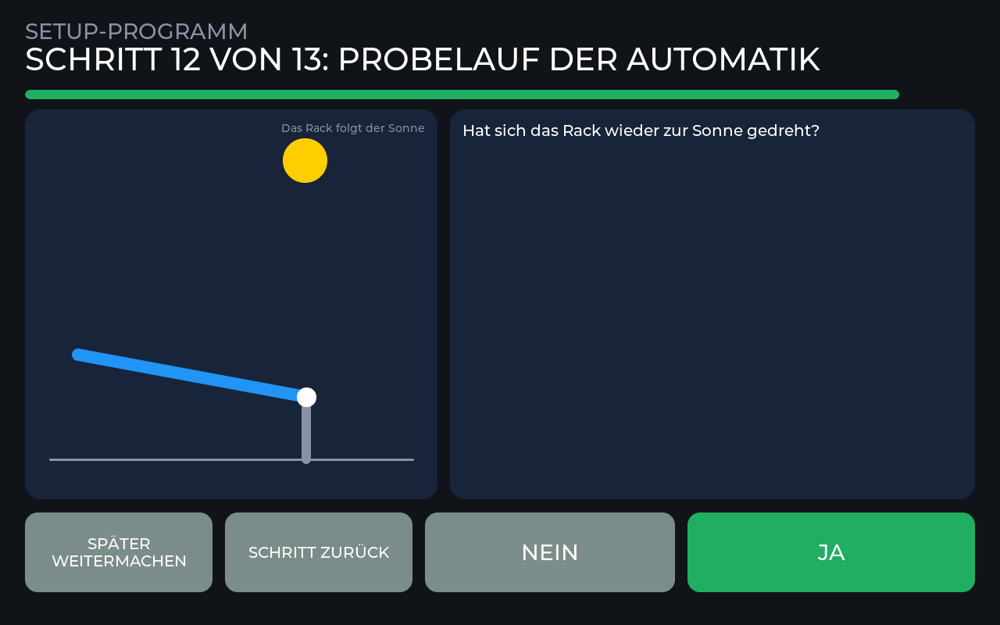
Erklärung, dann „Verstellt das Rack ein wenig …“, dann die laufende Automatik mit der Abweichung in Prozent.
START, zuschauen, JA oder NEIN. 2 Achsen erst die Neigung, dann die Drehung.
Das Gerät verstellt die Achse etwa 4 s lang, dann fährt die Automatik zurück zur Sonne und hält an. „Der Probelauf ist bestanden.“
Fährt die Automatik von der Sonne weg, stellt das Gerät die Richtung selbst um („Die Richtung wurde umgestellt. Bitte noch einmal.“): bei der Neigung „Nord heller heißt RAUF“, bei der Drehung tauscht es die Eingänge Ost und West. „Die Automatik hat nicht ausgerichtet. Ist genug Sonne da?“: nach 3 min ohne Erfolg; bei Sonne wiederholen.
13Fertig
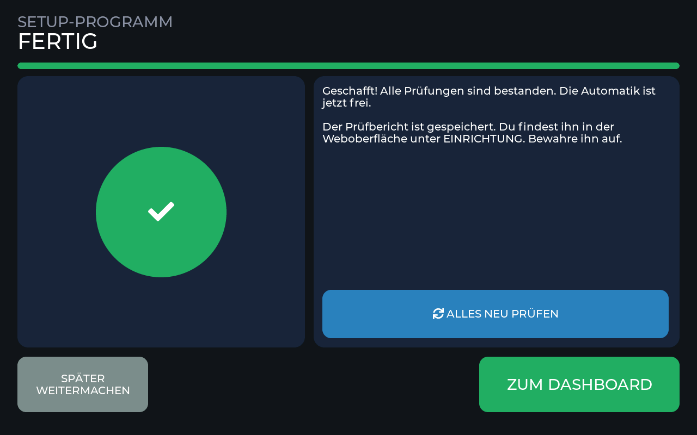
Einen grünen Haken, ZUM DASHBOARD und die Taste ALLES NEU PRÜFEN.
ZUM DASHBOARD. Den Automatik-Schalter oben einschalten, wenn er aus ist.
Das violette Band ist weg. Das Statusband zeigt die Automatik (zum Beispiel „AUTO: AUSGERICHTET“).
Ein Pflichtschritt fehlt noch: „Dieser Schritt fehlt noch.“ Zurück zu diesem Schritt.
5.4 Nach dem Abschluss
- Prüfbericht: Das Gerät speichert die letzten drei Berichte. In der Weboberfläche unter EINRICHTUNG → SETUP-PROGRAMM zeigt ANSEHEN den Bericht als gestaltetes Blatt (hell für den Drucker, dunkel für eine Datei) mit der Taste ALS PDF SPEICHERN; TEXT lädt ihn als Textdatei (seit Firmware 0.7.6, ältere Berichte nur als Text). Er enthält Datum, Firmware, Betriebsart, Windmesser, jeden Schritt mit Ergebnis und die Messwerte (Fahrzeiten, Hall-Schritte, abgelesener Winkel, Zuordnung des Sonnensensors, Antworten zu Leuchten, Ton und Bewegungsmelder). Bewahre ihn auf: Er hilft bei späteren Prüfungen und Nachfragen.
- Einzelne Werte bleiben unter WERTE änderbar (Kapitel 7); FAHRZEIT EINMESSEN lässt sich dort jederzeit wiederholen 1 Achse.
- Alles neu prüfen: Nach dem Tausch eines Teils (Antrieb, Sensor, Windmesser, Platine) oder nach einer geänderten Betriebsart: WERTE → INBETRIEBNAHME → SETUP-PROGRAMM (ALLES PRÜFEN) öffnet den Bildschirm „Fertig“; dort ALLES NEU PRÜFEN und in der Rückfrage NEU BEGINNEN. Das Programm beginnt bei Schritt 1. Bis alle Schritte wieder bestanden sind, ist die Automatik gesperrt; Sturmschutz und Parken wirken weiter. Der bisherige Prüfbericht bleibt gespeichert. Ein nur in der Simulation abgeschlossenes Setup-Programm beginnt am echten Rack von selbst neu (4.10).
6Standort, Ausrichtung, Sonne und Nacht
Kennt das Gerät die Uhrzeit (über WLAN) und den Standort, rechnet es den Lauf der Sonne aus: Sonnenaufgang, Sonnenuntergang, Höhe und Richtung der Sonne. Damit fährt es pünktlich in die Nachtstellung. Am Tag führt weiter der Sonnensensor nach.
Die Rechnung des Sonnenstands ist mit Vergleichswerten einer astronomischen Bibliothek getestet. Am Gerät mit echter Uhrzeit und echtem Rack ist sie noch nicht erprobt.
6.1 Die Seite SONNE
Im Dashboard steht in der Karte SONNENSENSOR oben ein kleines gelbes Feld mit Aufgang und Untergang, zum Beispiel „↑ 04:50 ↓ 21:23“. Antippen öffnet die Seite SONNE. Beim Öffnen läuft die Sonne in einer kurzen Animation vom Aufgang bis zum jetzigen Stand.
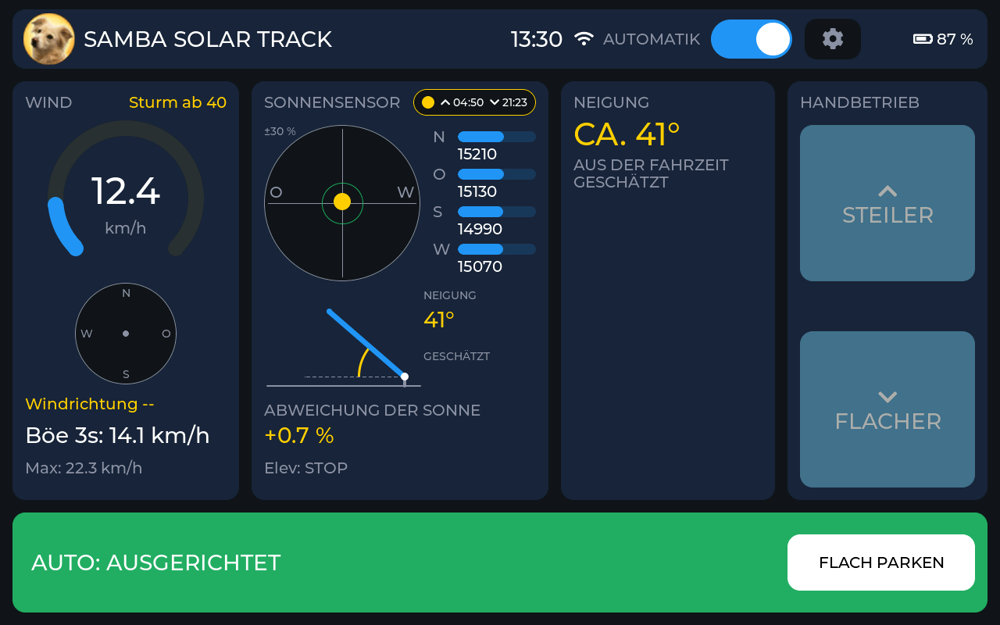
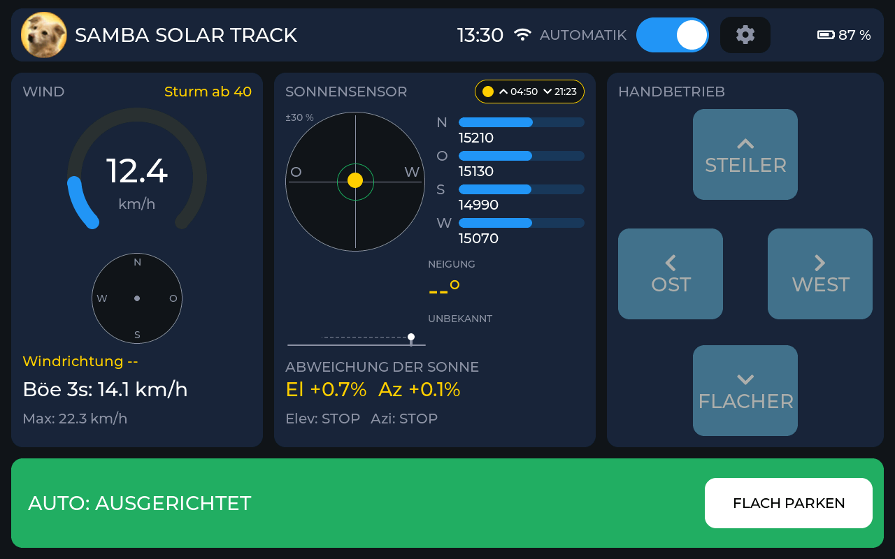
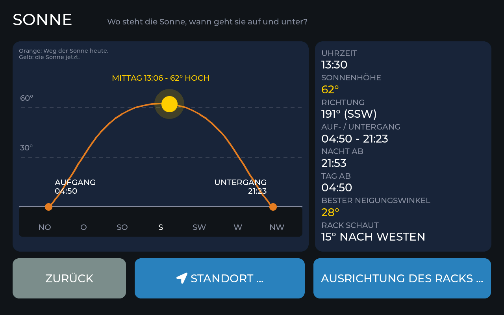
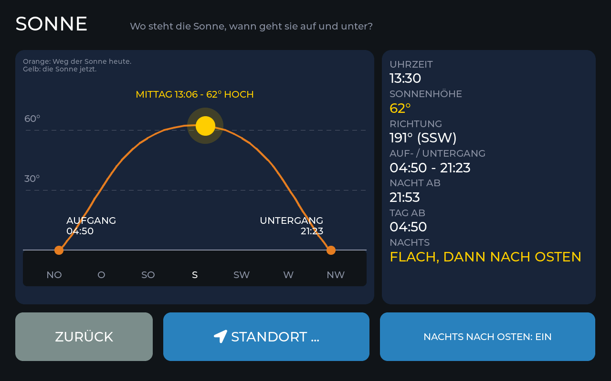
| Angabe | Bedeutung |
|---|---|
| Orange Linie | Weg der Sonne heute über den Himmel, von Nordost über Süd nach Nordwest (im Sommer). Gelber Punkt: die Sonne jetzt. |
| MITTAG | Uhrzeit und Höhe des höchsten Sonnenstands. |
| SONNENHÖHE, RICHTUNG | Wie hoch (in Grad über dem Horizont) und in welcher Himmelsrichtung die Sonne jetzt steht. |
| AUF- / UNTERGANG | Heute, für deinen Standort. |
| NACHT AB, TAG AB | Wann das Gerät in die Nachtstellung fährt und wann der Tag beginnt (mit den Versätzen aus 6.4). |
| BESTER NEIGUNGSWINKEL 1 Achse | Welche Neigung jetzt die meiste Sonne einfängt, unter Berücksichtigung der Ausrichtung des Racks. |
| RACK SCHAUT 1 Achse | Die eingestellte Ausrichtung (6.3). |
| NACHTS 2 Achsen | Nachtstellung: „FLACH, DANN NACH OSTEN“ oder nur flach. Die Taste NACHTS NACH OSTEN schaltet um. |
6.2 Standort eingeben
Den Standort erreichst du über die Taste STANDORT … auf der Seite SONNE oder im Setup-Programm (Schritt 10). Für den Sonnenstand reicht eine Genauigkeit von etwa 0,1° (rund 10 km): Der nächste Ort genügt.
- Ort suchen oder auf die Karte tippenIns Feld ORT SUCHEN die ersten Buchstaben deines Orts tippen und einen Vorschlag antippen. Oder mit + und − die Karte vergrößern, mit dem Finger verschieben und auf deinen Ort tippen. Ergebnis: Breite und Länge stehen in den Feldern.
- Zahlen prüfen oder eintippenWer die Koordinaten kennt (zum Beispiel aus einer Karten-App), tippt sie direkt ein: BREITE (NORD +), LÄNGE (OST +), in Dezimalgrad mit Punkt, zum Beispiel 51.0504 und 13.7373. Südlich des Äquators ist die Breite negativ, westlich von Greenwich die Länge. Ergebnis: Die Zahlen stimmen.
- ÜBERNEHMENErgebnis: Der rote Punkt sitzt auf deinem Ort; die Seite SONNE zeigt die Zeiten für deinen Standort.
Ab Werk steht beides auf 0. LEEREN setzt den Standort auf „nicht eingegeben“ zurück. Die Karte am Display ist im Gerät gespeichert und braucht kein Internet (Umrisse aus Natural Earth, Orte aus GeoNames). In der Weboberfläche gibt es zusätzlich eine Straßenkarte (Kapitel 8).
6.3 Ausrichtung des Racks 1 Achse
Ein Rack mit einer Achse kann sich nicht drehen. Steht es nicht genau nach Süden, steht die Sonne für das Rack zu anderen Zeiten „vorn“. Damit das Gerät richtig rechnet, sagst du ihm, wohin dein Rack schaut. Bei zwei Achsen entfällt dieser Wert, weil der Azimut der Sonne ohnehin folgt.
- Richtung messenMit einem Kompass (auch eine Handy-App reicht) hinter dem Rack in Blickrichtung der Paneele messen. Den Kompass nicht direkt an das Metall halten. Ergebnis: eine Himmelsrichtung, zum Beispiel 195° (Süd-Südwest).
- In den Wert umrechnenWert = Kompassrichtung − 180. Beispiel: 195° − 180 = +15. Bei 165° (Süd-Südost) ergibt das −15. Ergebnis: eine Zahl zwischen −90 und +90.
- EinstellenSeite SONNE → AUSRICHTUNG DES RACKS …, mit 5° OST, 1° OST, 1° WEST, 5° WEST einstellen, ÜBERNEHMEN. Ergebnis: Die Seite SONNE zeigt „RACK SCHAUT 15° NACH WESTEN“.
Der Wert hängt allein davon ab, wie du das Rack aufgestellt hast. Es gibt keine Voreinstellung für das Rack außer 0 (genau Süd). Ein paar Grad Abweichung des Kompasses sind unwichtig.
Wenn Uhrzeit oder Standort fehlen
Die Steuerung arbeitet trotzdem vollständig: Die Nacht erkennt sie dann an der Helligkeit, die Nachführung folgt wie immer dem Sonnensensor.
6.4 Nacht und Nachtstellung
| Was das Gerät weiß | Nacht beginnt | Tag beginnt |
|---|---|---|
| Uhrzeit und Standort | Sonnenuntergang + „Nacht ab Sonnenuntergang plus“ (ab Werk 30 min), ohne Wartezeit | Sonnenaufgang − „Tag ab Sonnenaufgang minus“ (ab Werk 0 min) |
| Uhrzeit oder Standort fehlt | Helligkeit (Summe der vier Seiten) „Nacht oder Tag erst nach“ (ab Werk 5 min) lang unter „Nacht unter Helligkeit“ (ab Werk 4000) | ebenso lange über „Tag über Helligkeit“ (ab Werk 6000) |
1 Achse Nachtstellung
Die Elevation fährt flach (0-Lage) und bleibt dort bis zum Morgen.
2 Achsen Nachtstellung
Erst fährt die Elevation flach, danach dreht der Azimut nach Osten (Morgenstellung), wenn „Nachts zurück nach Osten“ ein ist (ab Werk ein). Sonst bleibt der Azimut stehen. Nie fahren beide Achsen zugleich.
Die Nachtfahrt ist eine normale Fahrt mit allen Schutzfunktionen; sie wartet zum Beispiel eine Pause der Einschaltdauer ab. Sturm, Parken und Handbetrieb haben Vorrang.
6.5 Bei Bewölkung den berechneten Winkel anfahren 1 Achse ab Werk aus
Bei dichter Bewölkung sieht der Sonnensensor keine Richtung. Ist dieser Schalter ein, fährt die Elevation dann den berechneten besten Winkel an (wie bei der Neigung auf Befehl), und das Statusband zeigt „BEWÖLKT: …“. Voraussetzungen: Uhrzeit, Standort und eine eingemessene Fahrzeit. „Bewölkt“ heißt: Die Summe der Helligkeit liegt 5 min lang unter „Bewölkt unter Helligkeit“ (ab Werk 20000); wieder sonnig ist es über dem 1,25-Fachen. Ein neues Ziel fährt das Gerät erst an, wenn es mindestens 3° vom alten abweicht.
Die Schwelle 20000 ist geschätzt. Beobachte an einem bedeckten Tag die Helligkeit in der Karte SONNENSENSOR (Summe der vier Werte) und stell die Schwelle etwas darüber ein (Kapitel 7).
7Alle einstellbaren Werte
Der Nachschlageteil: jeder Wert unter WERTE mit Bedeutung, Voreinstellung, Grenzen und wann er gilt. Dazu je eine Empfehlung für das Samba-Solar-Rack und eine Anleitung, wie du bei einer anderen Anlage den richtigen Wert findest. Alle Werte auf einen Blick: Anhang A.
Die Empfehlungen für das Rack stammen aus der Projektbeschreibung (README) und beziehen sich auf das Rack 2.0-E Plus mit Synchronsteuerung BST-KZQ-15A-2 und ohne Endschalter am Tracker. Sie sind gegen die aktuelle Fassung des Montagehandbuchs auf der Website zu prüfen. Wo eine Angabe fehlt, steht „am eigenen Rack messen“ oder „Voreinstellung“; Maße und Zeiten werden hier nicht geschätzt.
So änderst du einen Wert
- Zahnrad → WERTE …Die Taste gibt es erst, wenn die Einrichtung gespeichert ist. Ergebnis: Die Liste der Gruppe REGELUNG erscheint.
- Gruppe wählenREGELUNG, INBETRIEBNAHME, SICHERHEIT oder DIAGNOSE. Zum Blättern die Liste schieben. Ergebnis: Die Werte der Gruppe stehen da; gelb geschriebene weichen von der Voreinstellung ab.
- Zeile antippen, Wert einstellen, übernehmenErgebnis: Die Zeile zeigt den neuen Wert. Ist er außerhalb der Grenzen oder passt er nicht zu einem anderen Wert, lehnt das Gerät ihn ab und sagt warum.
| „Gilt“ | Bedeutung |
|---|---|
| sofort | Der neue Wert wirkt im nächsten Regelschritt. |
| nur bei stehenden Antrieben | Die Änderung wird abgelehnt, solange ein Antrieb fährt. Kurz warten oder FLACH PARKEN abwarten, dann noch einmal. |
| am Display sofort; aus der Ferne erst nach Bestätigung | Kommt der Wert aus Browser oder ioBroker, zeigt das Display eine Rückfrage mit altem und neuem Wert. Erst ÜBERNEHMEN macht ihn gültig. Vorschläge überstehen keinen Neustart. |
Nur ein Teil der Werte erscheint bei jeder Anlage: Werte für den Azimut nur bei 2 Achsen; Fahrzeiten, Gestell, Hall-Abgriff, Wunschwinkel, Ausrichtung und Bewölkung nur bei 1 Achse; Werte der Windrichtung nur beim Windmesser mit Richtung. Die Marken zeigen das.
SICHERHEIT
Sicherheitswerte schützen Mechanik und Antriebe. Ihre Grenzen sind fest. Aus der Ferne geändert, gilt ein neuer Wert erst, wenn du ihn am Display bestätigst (das Display zeigt alten und neuen Wert).
Sturmschwelle (Böe) beide stormKmh
Ab dieser Windgeschwindigkeit fährt das Rack flach. Gemessen wird die Böe: das Mittel über 3 Sekunden.
Haltezeit nach Sturm beide stormHoldMs
So lange bleibt das Rack nach der letzten Böe über der Sturmschwelle flach. Jede neue Böe startet die Zeit neu.
Totzeit beim Richtungswechsel beide motorDeadtimeMs
Pause, bevor ein Antrieb die Richtung wechseln darf. Schont Motor und Getriebe.
Höchstlaufzeit Elevation beide motorMaxRunMsElevation
Längste erlaubte Fahrt am Stück. Mit Endschaltern: Wird sie überschritten, meldet die Steuerung einen Antriebsfehler. Ohne Endschalter: Nach ihrem Ablauf gilt die Endlage als erreicht (Laufzeit-Endlage).
Höchstlaufzeit Azimut 2 Achsen motorMaxRunMsAzimuth
Wie oben, für die Drehung Ost – West.
INBETRIEBNAHME
Was an deinem Rack eingebaut ist und wie. Die meisten dieser Werte stellt das Setup-Programm selbst ein. Werte „nur bei stehenden Antrieben“ lehnt das Gerät ab, solange ein Antrieb fährt.
Endschalter Elevation eingebaut beide limitSwitchesElevation
Ja: An der Platine sind Endschalter (Öffner) für beide Enden der Neigung angeschlossen. Nein: Der Antrieb hält an seinem eigenen, eingebauten Endschalter; die Steuerung erkennt das Ende an der Höchstlaufzeit.
Endschalter Azimut eingebaut 2 Achsen limitSwitchesAzimuth
Wie oben, für die Drehung.
Sonnensensor OST / WEST / SÜD / NORD an Eingang AIN beide sunChEast, sunChWest, sunChSouth, sunChNorth
Welche Ader des Sonnensensors an welchem Eingang liegt. Bekommt eine Seite einen Eingang, den schon eine andere hat, tauschen die beiden.
Nord heller heißt RAUF beide sunNorthMeansUp
Legt fest, in welche Richtung die Neigung fährt, wenn die Seite NORD des Sensors heller ist als SÜD. Hängt davon ab, wie der Sensor eingebaut ist (Annahme ab Werk: NORD zeigt zur Oberkante des Moduls).
Flachstellung liegt Richtung RAUF beide stormParkElevationPlus
In welche Richtung (Kontakt RAUF oder RUNTER) das Rack flach wird. Bestimmt die Fahrt bei Sturm, Parken und Nacht, und welche Klemme die Tasten STEILER und FLACHER schalten.
Windmesser: Baudrate beide windBaud
Übertragungsgeschwindigkeit auf der RS485-Leitung (8 Datenbits, keine Parität, 1 Stoppbit).
Windmesser: Modbus-Adresse beide windSpeedAddr
Adresse des Windgeschwindigkeitsmessers am Bus.
Windmesser: Lesebefehl (3 oder 4) beide windSpeedFunction
Modbus-Befehl zum Lesen: 3 (Holding Register) oder 4 (Input Register).
Windmesser: Register beide windSpeedRegister
Nummer des Registers, in dem die Windgeschwindigkeit steht.
Windmesser: m/s je Zähler beide windSpeedScale
Umrechnung des Rohwerts in m/s. 0,1 heißt: Der Sensor liefert Zehntel m/s (Rohwert 86 = 8,6 m/s).
Windrichtung: Modbus-Adresse, Lesebefehl, Register, Grad je Zähler beide windDirAddr, windDirFunction, windDirRegister, windDirScale
Dieselben Angaben für den Richtungssensor (nur beim Windmesser mit Windrichtung). 0,1 Grad je Zähler: Rohwert 0 bis 3600 = 0° bis 360°.
Fahrzeit 0 auf 60 Grad (steiler) / 60 auf 0 Grad (flacher) 1 Achse elevTravelSteepMs, elevTravelFlatMs
Wie lange die Neigung über den ganzen Weg braucht. Daraus schätzt das Gerät jeden Winkel (Neigung auf Befehl). Gilt nur, wenn sie kürzer als 0,9 × Höchstlaufzeit ist.
Gestell (Neigung aus dem Hub) 1 Achse elevGeometry
Wie aus dem Weg des Antriebs ein Winkel wird. G1 und G2 sind die Tabellen der Samba-Solar-Racks (Montagehandbuch, Anhang 16.1).
Anlaufverlust je Fahrt 1 Achse elevStartLossMs
Zeit, die jeder Antrieb beim Anlaufen und Auslaufen verliert. Verbessert die Schätzung bei vielen kurzen Fahrten.
Hall-Abgriff vorhanden 1 Achse elevHall
Ja: Das HallTapBoard gibt die Impulse des Antriebs an die Platine (Eingang J22). Dann misst das Gerät die Neigung, statt sie zu schätzen, und erkennt, ob der Antrieb wirklich fährt. Bei zwei Achsen bleibt er aus.
Hall-Zählrichtung umkehren 1 Achse elevHallInvert
Dreht die Zählrichtung um, wenn die Kanäle A und B anders herum angeschlossen sind.
Hall-Schritte je Hub 1 Achse elevHallSteps
Wie viele Hall-Schritte der Antrieb über den ganzen Weg zählt. Trägt das Einmessen ein (Mittel aus AUF und AB).
Reset Synchronsteuerung Elevation beide syncResetElevation
Ob und wo der Reset-Eingang (RST) einer Synchronsteuerung angeschlossen ist. Manche Synchronsteuerungen sperren nach einem Stromausfall während einer Fahrt, bis RST kurz mit COM verbunden wird; dann fahren sie die Antriebe ganz ein.
Reset Synchronsteuerung Azimut 2 Achsen syncResetAzimuth
Wie oben, für die Drehung (Klemme J23, Pol 3–4).
Standort: Breite (Nord positiv) / Länge (Ost positiv) beide siteLatitude, siteLongitude
Wo das Rack steht. Für Sonnenauf- und -untergang. Am bequemsten über die Karte (Kapitel 6.2).
Ausrichtung des Racks (Süd 0, West positiv) 1 Achse rackAzimuth
Wohin die Paneele schauen (Kapitel 6.3).
REGELUNG
Wie die Automatik nachführt und wann Nacht ist. Alle Werte gelten sofort.
Nachführen ab Abweichung beide trackStartPermille
Erst wenn der Sonnensensor zwischen zwei Seiten mehr als diesen Unterschied sieht, beginnt eine Nachführfahrt.
Ausgerichtet unter Abweichung beide trackStopPermille
Unter diesem Unterschied gilt die Achse als ausgerichtet, die Fahrt endet.
Wartezeit vor einer Fahrt beide trackStartDelayMs
So lange muss die Abweichung bestehen, bevor gefahren wird. Verhindert Fahrten wegen einer kurzen Wolke.
Ruhezeit nach einer Fahrt beide trackSettleMs
Pause nach jeder Nachführfahrt.
Längste Nachführfahrt beide trackMaxMoveMs
Eine einzelne Nachführfahrt endet spätestens nach dieser Zeit.
Nacht unter Helligkeit (Summe) beide nightEnterLevel
Nur ohne Uhrzeit oder Standort: Liegt die Summe der vier Helligkeiten so lange unter diesem Wert, ist Nacht.
Tag über Helligkeit (Summe) beide nightExitLevel
Über diesem Wert ist wieder Tag. Gilt auch als Mindesthelligkeit für Sonnensensor und Probelauf im Setup-Programm.
Nacht oder Tag erst nach beide nightDelayMs
So lange muss die Helligkeit unter bzw. über der Schwelle liegen. Gilt auch für „bewölkt“.
Nachts zurück nach Osten 2 Achsen nightReturnEast
Ja: In der Nacht dreht der Azimut nach der Flachfahrt nach Osten, damit die Anlage morgens bereit steht.
Nacht ab Sonnenuntergang plus beide nightAfterSunsetMin
Mit Uhrzeit und Standort: so viele Minuten nach Sonnenuntergang beginnt die Nacht.
Tag ab Sonnenaufgang minus beide dayBeforeSunriseMin
So viele Minuten vor Sonnenaufgang endet die Nacht.
Bei Bewölkung berechneten Winkel anfahren 1 Achse cloudAstro
Bei Bewölkung fährt die Neigung den berechneten besten Winkel an (Kapitel 6.5).
Bewölkt unter Helligkeit (Summe) 1 Achse cloudLevel
Unter dieser Summe gilt es als bewölkt (Annahme, am Gerät einstellen).
Wunschwinkel 1 / Wunschwinkel 2 1 Achse elevPreset1, elevPreset2
Bis zu zwei eigene Winkel als zusätzliche Tasten in der Karte NEIGUNG (neben 0°, 30°, 60°).
DIAGNOSE
Nur für die Fehlersuche.
Log-Stufe (0 aus, 5 alles) beide logLevel
Wie ausführlich das Gerät protokolliert (0 aus, 1 Fehler, 2 Warnungen, 3 Info, 4 Debug, 5 alles).
Feste Werte, die du nicht einstellen kannst
Einige Schutzwerte stehen fest in der Firmware. Du solltest sie kennen, weil sie erklären, warum das Rack manchmal wartet.
| Schutz | Wert | Was du merkst |
|---|---|---|
| Einschaltdauer: Fahrt am Stück | höchstens 120 s | Ist das Fahrzeitkonto eines Antriebs leer, beginnt eine Pause. Das Statusband zeigt orange „PAUSE EINSCHALTDAUER: ANTRIEB WIEDER FREI IN mm:ss“. Nach voller Leerung dauert sie etwa 13,5 min. Nur die Flachfahrt bei Sturm, Windmesser-Ausfall und Parken fährt trotzdem. |
| Einschaltdauer: Anteil | 10 %; frei wieder ab 90 s angespartem Konto (Annahme) | |
| Erneute Flachfahrt bei Sturm (ohne Endschalter) | alle 30 min | Bei Sturm und Ausfall des Windmessers fährt die Elevation regelmäßig erneut flach, falls eine frühere Fahrt ohne Wirkung blieb. |
| Probefahrt im Setup-Programm | höchstens 5 s | Die Probefahrt FLACHER bzw. OST hält von selbst an. |
Die Werte der Einschaltdauer sind Händlerangaben zu den Antrieben des Samba-Solar-Racks (10 % Einschaltdauer, 120 s am Stück). Andere Antriebe können mehr oder weniger vertragen; einstellbar ist das in Firmware 0.7.0 nicht.
8Weboberfläche: Einstellen aus der Ferne
Ist das WLAN verbunden, kannst du die Anlage im Browser von Handy oder PC ansehen, bedienen und einstellen. Die Seite sieht aus wie das Display. Das Display bleibt aber das Hauptgerät: Alles, was es aus der Ferne gibt, gibt es auch am Display, und manches gibt es nur dort.
Ansehen und Update über das Netz sind am Testboard ausprobiert (in der Simulation, ohne Platine). Bedienen und Einstellen aus der Ferne sind dort noch nicht ausprobiert; Standortkarte, Sonne und Prüfbericht sind neu in 0.7.0 und nur am PC geprüft.
Öffnen und anmelden
- Adresse öffnenIm selben WLAN die Adresse aus dem Bildschirm NETZWERK in den Browser tippen, oder
http://samba-solar-track.local. Ergebnis: Die Übersicht erscheint; ohne Anmeldung steht oben „NUR ANSICHT“. - AnmeldenAm Handy den QR-Code unter NETZWERK → FERNZUGRIFF scannen. Am PC TOKEN EINGEBEN und die vier Blöcke des Tokens eintippen, die der Bildschirm NETZWERK zeigt. Ergebnis: Der Browser darf bedienen und einstellen; er merkt sich die Anmeldung.
Was aus der Ferne geht
| Seite | Einstellung | Wie es wirkt |
|---|---|---|
| EINRICHTUNG | Sprache, Design | sofort, am Display und im Browser; nur solange am Display das Dashboard offen ist |
| EINRICHTUNG | Betriebsart, Windmesser | wie SPEICHERN am Display: Antriebe stoppen, Neustart nach 1,5 s |
| EINRICHTUNG | Standort (Karte), Ausrichtung des Racks 1 Achse | sofort |
| EINRICHTUNG | Setup-Programm: Stand und Prüfberichte (je ANSEHEN, als PDF speichern, und TEXT) | nur ansehen, speichern und herunterladen |
| EINRICHTUNG | Firmware aufspielen oder aus dem Internet installieren; Simulation beenden | mit Token; nicht bei Sturm und nicht, solange ein Antrieb fährt |
| WERTE | alle Werte aus Kapitel 7 | Regelung und Inbetriebnahme sofort bzw. bei Stillstand; Sicherheitswerte, Richtung der Flachstellung und Daten der Windgeschwindigkeit erst nach Bestätigung am Display |
| WERTE | SYNCHRONSTEUERUNG ZURÜCKSETZEN | mit Rückfrage im Browser |
Standort und Ausrichtung im Browser
Im Browser gibt es eine Straßenkarte (Leaflet mit Karten von OpenStreetMap) und eine Ortssuche (Nominatim). Die Kartenbilder lädt dein Browser aus dem Internet, nicht das Gerät; ohne Internet gehen die Zahlenfelder trotzdem.
Was nur am Display geht, und warum
| Nur am Display | Warum |
|---|---|
| Das Setup-Programm durchlaufen | Bei jeder Prüffahrt muss jemand am Rack stehen und zusehen. Der Browser zeigt nur den Fortschritt. |
| FAHRZEIT EINMESSEN 1 Achse | Gleicher Grund: Du tippst ANGEKOMMEN, wenn der Rahmen steht. Während des Einmessens lehnt das Gerät Handfahrten aus der Ferne ab. |
| Bestätigen von Sicherheitswerten | Ein Wert, der die Mechanik schützt, soll nicht unbemerkt aus der Ferne geändert werden. |
| WLAN-Name und Passwort | Ohne WLAN gibt es keinen Browser. Alternativ über den Einrichtungs-Hotspot (4.4). |
| QR-Code, Token anzeigen, TOKEN ERNEUERN, FERNSTEUERUNG sperren | Wer am Gerät steht, entscheidet, wer fernsteuern darf. |
| Simulation einschalten | Braucht eine Bestätigung am Gerät und geht nur ohne Platine. |
| Ton, Bildschirm (Ruhezustand, Bewegungsmelder, Akku) | Betrifft nur das Gerät selbst. |
Gesperrt nimmt das Gerät aus der Ferne keinen Befehl, keine Änderung und kein Firmware-Update an. Anzeigen und Meldungen laufen weiter. Sturmschutz, Endschalter, Totzeit und Laufzeitüberwachung lassen sich aus der Ferne nie aufheben.
9Fehlersuche bei der Einrichtung
Die häufigsten Meldungen und Beobachtungen beim Einrichten, mit Ursache und Abhilfe. Fehler der Verkabelung behandelt das Verkabelungshandbuch, Fehler der Platine das Handbuch für Aufbau und Bedienung.
| Anzeige oder Beobachtung | Ursache | Abhilfe |
|---|---|---|
| Alles auf Englisch | Ab Werk ist die Sprache Englisch. | In der Sprachwahl DEUTSCH antippen (4.1). |
| SPEICHERN + NEUSTART lässt sich nicht tippen | Betriebsart oder Windmesser nicht gewählt. | Beides wählen. |
| Taste WERTE fehlt | Einrichtung noch nicht gespeichert. | Erst SPEICHERN + NEUSTART. |
| BEREIT blinkt, nichts fährt | Einrichtung fehlt. | Einrichtung speichern. |
| Violettes Band „SETUP-PROGRAMM FEHLT: AUTOMATIK GESPERRT“ | Setup-Programm nicht abgeschlossen. | Band antippen und fortsetzen (Kapitel 5). |
| Nach dem Aufstecken der Platine: violettes Band „SETUP-PROGRAMM FEHLT“, obwohl das Setup-Programm fertig war | Es wurde nur in der Simulation abgeschlossen. Am echten Rack beginnt es dann von selbst neu. | Gewollt. Setup-Programm am Rack durchgehen (Kapitel 5). |
| „SIMULATION NICHT MÖGLICH“ | Die Platine RearCircuitBoard_10 steckt. | Mit Platine gibt es keine Simulation; das ist gewollt. |
| Schritt 3: Feld 0x70 rot | Platine steckt nicht richtig, Baustein gestört. | Versorgung aus, Platine auf der Buchsenleiste J8 prüfen. Ohne 0x70 fährt nichts. |
| Schritt 3: 24 V oder 5 V rot | Netzteil der Steuerung aus, Sicherung, Wandler. | Netzteil und Sicherung prüfen (Verkabelungshandbuch). |
| Schritt 3: AKKU rot | Ladesperre unplausibel. | Handbuch für Aufbau und Bedienung, Kapitel 7. |
| Schritt 3: 0x72 rot | Reset an J23 gewählt, Baustein antwortet nicht (Platine vor Entwurf 0.12?). | In Schritt 2 Reset auf „aus“ stellen oder Platine prüfen. |
| „Das Windrad wurde noch nicht gedreht.“ | Anzeige stieg um weniger als 2 km/h, oder der Windmesser antwortet nicht. | Kräftiger drehen. Antwortet er nicht: RS485-Leitung (A/B vertauscht?), Versorgung, Adresse und Baudrate. |
| Windrichtung zeigt nicht Norden | Sensor verdreht eingebaut oder falsche Werte. | Nordmarke des Sensors ausrichten, Werte der Windrichtung prüfen, WIEDERHOLEN. |
| Bei FLACHER wurde das Rack steiler | Richtung der Flachstellung andersherum. | NEIN tippen: Das Gerät stellt um. WIEDERHOLEN. |
| Bei FLACHER bewegt sich nichts | Netzteil der Antriebe aus, Kontakte nicht angeschlossen, Synchronsteuerung nicht im Tastbetrieb oder gesperrt (zum Beispiel nach Stromausfall). | Verkabelung prüfen; bei Synchronsteuerung mit Reset: Reset einstellen und auslösen. |
| „Antrieb gestört (Höchstlaufzeit). Quittieren und wiederholen.“ | Mit „Endschalter eingebaut = ja“ kam der Endschalter nicht vor Ablauf der Höchstlaufzeit. | Endschalter vorhanden? Sonst auf nein stellen. Sonst Höchstlaufzeit erhöhen. QUITTIEREN, WIEDERHOLEN. |
| Beide Richtungen gesperrt, nichts fährt | „Endschalter eingebaut = ja“, aber keine Endschalter angeschlossen (offener Eingang = Endlage). | Auf nein stellen (Endschalter). |
| „Antrieb steht ohne Endlage (Hall-Abgriff).“ | Hall-Impulse blieben mitten im Weg aus: Mechanik klemmt, Antrieb ohne Spannung, Synchronsteuerung hat abgebrochen. | Mechanik und Versorgung der Antriebe prüfen, WIEDERHOLEN. |
| „Die Fahrzeit ist noch nicht eingemessen.“ | FAHRZEIT EINMESSEN nicht abgeschlossen. | Einmessen und ÜBERNEHMEN. |
| Einmessen: „HÖCHSTLAUFZEIT ZU KURZ ODER ANGEKOMMEN NICHT GETIPPT“ | Fahrt dauerte länger als die Höchstlaufzeit, oder ANGEKOMMEN vergessen. | Höchstlaufzeit erhöhen, neu messen. |
| Einmessen: „HALL ZÄHLT RÜCKWÄRTS“ | Kanäle A und B vertauscht. | Hall-Zählrichtung umkehren = ja. |
| Bei OST dreht das Rack nach Westen | Kontakte OST und WEST vertauscht. | Netzteil aus, Stecker an J5 und J6 tauschen, WIEDERHOLEN. |
| „Reset nicht möglich (Anschluss oder Baustein prüfen).“ | Reset begann nicht innerhalb von 20 s. | Klemme und Einstellung des Resets prüfen. |
| „Zu dunkel: … wiederholen.“ | Helligkeit unter der Tag-Schwelle. | Bei Tageslicht oder mit heller Lampe vor dem Sensor. |
| Sonnensensor: Seite wird nicht erkannt | Schatten zu klein (weniger als 25 % dunkler) oder nur kurz. | Hand näher, Schatten über die ganze Seite, 1 s halten. |
| „Noch keine Uhrzeit: WLAN einrichten oder überspringen.“ | WLAN aus oder Zeitserver nicht erreichbar. | WLAN einrichten (4.4) oder ÜBERSPRINGEN. |
| Uhrzeit um eine oder mehrere Stunden falsch | Zeitzone falsch. | NETZWERK → UHRZEIT → VORSCHLÄGE. |
| „Noch kein Standort: eingeben oder überspringen.“ | Breite und Länge sind 0. | Standort eingeben (6.2). |
| Aufgang und Untergang passen nicht zu deinem Ort | Breite und Länge vertauscht oder Vorzeichen falsch. | Breite = Nord, Länge = Ost; prüfen. |
| Probelauf: „Die Richtung wurde umgestellt. Bitte noch einmal.“ | Automatik fuhr von der Sonne weg. | WIEDERHOLEN; das Gerät hat den Wert schon berichtigt. |
| „Die Automatik hat nicht ausgerichtet. Ist genug Sonne da?“ | Nach 3 min nicht ausgerichtet. | Bei Sonne wiederholen; Sensor frei von Schatten? |
| „Sturm: Das Rack fährt flach. Danach wiederholen.“ | Böe über der Sturmschwelle. | Ende des Sturms und der Haltezeit abwarten, WIEDERHOLEN. |
| Orange „PAUSE EINSCHALTDAUER …“ | Fahrzeitkonto des Antriebs leer. | Warten; die Restzeit steht dabei (Kapitel 7). |
| Wert wird abgelehnt | Außerhalb der Grenzen, passt nicht zu einem anderen Wert, oder ein Antrieb fährt. | Grund lesen; bei „nur bei stehenden Antrieben“ kurz warten. |
| Browser: Änderung wird nicht angenommen | Nicht angemeldet, FERNSTEUERUNG gesperrt, oder am Display ist nicht das Dashboard offen (Sprache, Design). | Anmelden, Sperre am Display lösen, Display zurück zum Dashboard. |
10Begriffe einfach erklärt
- Achse
- Eine Richtung, in die sich das Rack bewegen kann. Elevation = Neigung, Azimut = Drehung.
- Automatik
- Die Steuerung führt das Rack von selbst der Sonne nach, fährt nachts in die Nachtstellung und morgens zurück. Schalter AUTOMATIK in der Kopfzeile.
- Azimut
- Die Drehung von Ost nach West, nur bei 2 Achsen. Auch: die Himmelsrichtung der Sonne in Grad.
- Böe
- Hier: das Mittel der Windgeschwindigkeit über 3 Sekunden. Liegt sie über der Sturmschwelle, gilt Sturm.
- Dezimalgrad
- Schreibweise für Breite und Länge mit Nachkommastellen, zum Beispiel 51.0504 statt 51° 3′ 1″.
- Einmessen
- Das Gerät misst die Fahrzeit (und mit Hall-Abgriff die Hall-Schritte) über den ganzen Weg der Neigung. Nur bei 1 Achse.
- Einschaltdauer
- Wie lange ein Antrieb im Verhältnis zur Pause laufen darf, ohne zu überhitzen. Hier 10 % und höchstens 120 s am Stück.
- Einrichtung
- Der Bildschirm mit Betriebsart und Windmesser. Ohne gespeicherte Einrichtung fährt kein Antrieb.
- Elevation
- Die Neigung des Moduls zwischen flach und steil.
- Endlage
- Das Ende des Fahrwegs in einer Richtung.
- Endschalter
- Ein Schalter am Ende des Fahrwegs, der beim Erreichen öffnet (Öffner, NC). Offen heißt für die Steuerung: Richtung gesperrt.
- Flachstellung
- Die flache Lage des Moduls. Zugleich Sturmstellung und Nachtstellung (0-Lage).
- Gestell G1, G2
- Die Bauformen der Samba-Solar-Racks. Sie bestimmen, wie aus dem Weg des Antriebs ein Winkel wird.
- Hall-Abgriff, Hall-Schritte
- Viele Antriebe haben einen Hall-Sensor, der beim Fahren Impulse gibt. Das HallTapBoard leitet sie an die Platine. Ein Hall-Schritt ist eine gezählte Flanke dieser Impulse.
- Haltezeit
- So lange bleibt das Rack nach der letzten Sturmböe flach.
- Handbetrieb
- Automatik aus: Das Rack fährt nur, solange du eine Fahrtaste hältst.
- Höchstlaufzeit
- Längste erlaubte Fahrt am Stück. Ohne Endschalter erkennt die Steuerung daran die Endlage.
- Hotspot
- Ein eigenes, kurzzeitiges WLAN des Geräts, um mit dem Handy die WLAN-Daten einzugeben.
- Laufzeit-Endlage
- Ohne Endschalter: Nach der ganzen Höchstlaufzeit am Stück gilt die Endlage als erreicht.
- Modbus, RS485
- Die Art, wie der Windmesser über zwei Adern mit der Platine spricht. Jeder Sensor am Bus hat eine Adresse.
- NTP, Zeitserver
- Ein Dienst im Internet, von dem das Gerät die genaue Uhrzeit holt.
- 0-Lage
- Die Nachtstellung: Elevation flach.
- Probelauf
- Letzter Prüfschritt des Setup-Programms: Die Automatik muss das verstellte Rack wieder zur Sonne drehen.
- Prüfbericht
- Bericht mit allen Ergebnissen und Messwerten des Setup-Programms, in der Weboberfläche als gestaltetes Blatt (PDF) oder als Textdatei; die letzten drei bleiben im Gerät.
- Reset der Synchronsteuerung
- Ein kurzer Kontakt zwischen RST und COM, mit dem sich manche Synchronsteuerungen nach einem Fehler wieder freigeben; sie fahren dabei die Antriebe ganz ein.
- Setup-Programm
- Die geführte Prüfung der ganzen Anlage nach der Einrichtung. Erst danach ist die Automatik frei.
- Simulation
- Betrieb ohne Platine mit nachgebildetem Rack, nur zum Ausprobieren.
- Sonnensensor
- Ein Sensor mit vier Seiten (Ost, West, Süd, Nord). Aus dem Unterschied der Helligkeit erkennt die Steuerung, wo die Sonne steht.
- Sturmschwelle
- Windgeschwindigkeit, ab der das Rack flach fährt.
- Synchronsteuerung
- Ein Steuergerät, das zwei Antriebe einer Achse genau gleich schnell fahren lässt (zum Beispiel BST-KZQ-15A-2). Die Platine „drückt“ seine Tasten.
- Token
- Geheimer Schlüssel aus 32 Zeichen. Wer ihn hat, darf aus der Ferne bedienen.
- Totzeit
- Pause vor einem Richtungswechsel.
- Weboberfläche
- Die Bedienseite im Browser von Handy oder PC, im Heim-WLAN.
11Anhang
A. Alle Werte auf einen Blick
Gilt: „sofort“, „Stillstand“ = nur bei stehenden Antrieben, „Bestätigung¹“ = am Display sofort, aus der Ferne erst nach Bestätigung am Display. Achsen: 1 = nur 1 Achse, 2 = nur 2 Achsen, 1+2 = beide. Spalte Samba-Solar-Rack: Kurzform, Einzelheiten in Kapitel 7. Einzelheiten und Empfehlungen für andere Racks: Namen anklicken.
| Wert (Display) | Achsen | Voreinstellung | Erlaubt | Gilt | Samba-Solar-Rack |
|---|---|---|---|---|---|
| SICHERHEIT | |||||
| Sturmschwelle (Böe) | 1+2 | 40 km/h | 20 bis 60 km/h | Bestätigung¹ | 40 km/h |
| Haltezeit nach Sturm | 1+2 | 10 min | 5 bis 60 min | Bestätigung¹ | 10 min |
| Totzeit beim Richtungswechsel | 1+2 | 500 ms | 300 bis 5000 ms | Bestätigung¹ | 500 ms |
| Höchstlaufzeit Elevation | 1+2 | 60 s | 5 bis 300 s | Bestätigung¹ | 90 s |
| Höchstlaufzeit Azimut | 2 | 90 s | 5 bis 300 s | Bestätigung¹ | – |
| INBETRIEBNAHME | |||||
| Endschalter Elevation eingebaut | 1+2 | ja | ja / nein | Stillstand | nein |
| Endschalter Azimut eingebaut | 2 | ja | ja / nein | Stillstand | – |
| Sonnensensor OST / WEST / SÜD / NORD an Eingang AIN | 1+2 | OST AIN0, WEST AIN1, SÜD AIN2, NORD AIN3 | AIN0 bis AIN3, jede Seite ein anderer Eingang | Stillstand | Setup-Programm |
| Nord heller heißt RAUF | 1+2 | ja | ja / nein | Stillstand | Setup-Programm |
| Flachstellung liegt Richtung RAUF | 1+2 | ja | ja / nein | Bestätigung¹ | Setup-Programm |
| Windmesser: Baudrate | 1+2 | 9600 Baud | 1200 bis 115200 | Bestätigung¹ | 9600 |
| Windmesser: Modbus-Adresse | 1+2 | 3 | 1 bis 247 | Bestätigung¹ | 3 |
| Windmesser: Lesebefehl (3 oder 4) | 1+2 | 3 | 3 oder 4 | Bestätigung¹ | 3 |
| Windmesser: Register | 1+2 | 0 | 0 bis 65535 | Bestätigung¹ | 0 |
| Windmesser: m/s je Zähler | 1+2 | 0,1 | 0,001 bis 10 | Bestätigung¹ | 0,1 |
| Windrichtung: Modbus-Adresse, Lesebefehl, Register, Grad je Zähler | 1+2 | 4 · 3 · 0 · 0,1 | 1–247 · 3/4 · 0–65535 · 0,001–10 | sofort | 4 · 3 · 0 · 0,1 |
| Fahrzeit 0 auf 60 Grad (steiler) / 60 auf 0 Grad (flacher) | 1 | 0 = nicht eingemessen | 0 oder 10 bis 300 s | Stillstand | einmessen |
| Gestell (Neigung aus dem Hub) | 1 | linear | linear · G1 (2.0-D, 2.0-E) · G2 (2.0-E Plus, 2.1, 2.1 Plus) | Stillstand | G2 (2.0-E Plus) |
| Anlaufverlust je Fahrt | 1 | 0 ms | 0 bis 3000 ms | Stillstand | 0 ms |
| Hall-Abgriff vorhanden | 1 | nein | ja / nein | Stillstand | ja mit HallTapBoard |
| Hall-Zählrichtung umkehren | 1 | nein | ja / nein | Stillstand | nein |
| Hall-Schritte je Hub | 1 | 0 = nicht eingemessen | 0 oder 1000 bis 2000000 | Stillstand | einmessen |
| Reset Synchronsteuerung Elevation | 1+2 | aus | aus · J23 · J5 (J5 nur bei 1 Achse) | Stillstand | J23 |
| Reset Synchronsteuerung Azimut | 2 | aus | aus · J23 | Stillstand | – |
| Standort: Breite (Nord positiv) / Länge (Ost positiv) | 1+2 | 0 / 0 = nicht eingegeben | Breite −90 bis 90, Länge −180 bis 180 Grad | sofort | dein Ort |
| Ausrichtung des Racks (Süd 0, West positiv) | 1 | 0° | −90 bis 90 Grad, ganze Grad | sofort | messen |
| REGELUNG | |||||
| Nachführen ab Abweichung | 1+2 | 8 % | 3 bis 30 % | sofort | Voreinstellung |
| Ausgerichtet unter Abweichung | 1+2 | 2 % | 0,5 bis 10 %, immer kleiner als „Nachführen ab“ | sofort | Voreinstellung |
| Wartezeit vor einer Fahrt | 1+2 | 3 s | 0 bis 60 s | sofort | Voreinstellung |
| Ruhezeit nach einer Fahrt | 1+2 | 15 s | 0 bis 600 s | sofort | Voreinstellung |
| Längste Nachführfahrt | 1+2 | 20 s | 1 bis 120 s | sofort | Voreinstellung |
| Nacht unter Helligkeit (Summe) | 1+2 | 4000 | 0 bis 100000 | sofort | Voreinstellung |
| Tag über Helligkeit (Summe) | 1+2 | 6000 | 0 bis 130000, immer größer als die Nacht-Schwelle | sofort | Voreinstellung |
| Nacht oder Tag erst nach | 1+2 | 5 min | 10 s bis 60 min | sofort | Voreinstellung |
| Nachts zurück nach Osten | 2 | ja | ja / nein | sofort | – |
| Nacht ab Sonnenuntergang plus | 1+2 | 30 min | 0 bis 180 min | sofort | Voreinstellung |
| Tag ab Sonnenaufgang minus | 1+2 | 0 min | 0 bis 180 min | sofort | Voreinstellung |
| Bei Bewölkung berechneten Winkel anfahren | 1 | nein | ja / nein | sofort | nach Wunsch |
| Bewölkt unter Helligkeit (Summe) | 1 | 20000 | 0 bis 130000 | sofort | nach Wunsch |
| Wunschwinkel 1 / Wunschwinkel 2 | 1 | 0 = aus | 0 oder 1 bis 59°, nicht 30, nicht doppelt | sofort | nach Wunsch |
| DIAGNOSE | |||||
| Log-Stufe (0 aus, 5 alles) | 1+2 | 4 | 0 bis 5 | bis Neustart | Voreinstellung |
B. Meine Werte (zum Ausdrucken)
Trag hier ein, was du an deiner Anlage eingestellt und gemessen hast. Die Messwerte des Setup-Programms stehen auch im Prüfbericht.
| Angabe | Mein Wert | Datum |
|---|---|---|
| Betriebsart (1 oder 2 Achsen), Windmesser | ||
| Endschalter Elevation / Azimut | ||
| Höchstlaufzeit Elevation / Azimut | ||
| Gemessene Fahrzeit steiler / flacher | ||
| Fahrzeit Ost / West / zurück nach Ost (2 Achsen) | ||
| Hall-Schritte je Hub | ||
| Abgelesener Winkel bei 30° (1 Achse) | ||
| Flachstellung Richtung RAUF (ja/nein) | ||
| Standort Breite / Länge | ||
| Ausrichtung des Racks (1 Achse) | ||
| Helligkeit (Summe) in der Dämmerung / bei Bewölkung | ||
| Gerätename, Adresse im WLAN |
C. Annahmen und offene Punkte
| Punkt | Stand |
|---|---|
| Firmware 0.7.0 mit Setup-Programm, Sonnenstand und Standort | nur am PC und in der Simulation getestet, nicht am Rack |
| Grenzwerte des Setup-Programms (Fahrzeiten, Hall-Schritte, Winkel) | keine; werden nach Lieferung der Antriebe am Rack festgelegt (E-S3) |
| 0-Lage = Flachstellung (Sturmrichtung) | Annahme für alle Antriebsvarianten |
| Einbaulage des Sonnensensors (NORD zur Oberkante) | Annahme; Setup-Programm berichtigt die Richtung |
| Schwelle „bewölkt“ 20000 | Annahme, am Gerät einstellen |
| Reset der Synchronsteuerung: Impuls 5 s, Verhalten danach | Annahme, am Rack messen |
| Freigabe der Einschaltdauer nach 90 s angespartem Konto | Annahme, am Rack prüfen |
| Höchstlaufzeit 90 s und Gestell G2 für das Rack 2.0-E Plus | aus der README; gegen das aktuelle Montagehandbuch prüfen |
| Gestell „linear“ für andere Racks | Annahme |
D. Weitere Unterlagen
- Handbuch für Aufbau und Bedienung (
index.html): Platine, Sensoren, Firmware, Bedienung. - Verkabelungshandbuch (
verkabelung.html): alle Leitungen. - Montagehandbuch des Samba-Solar-Rack: Website und Shop.
12Lizenz und Copyright
Samba Solar Track darfst du für dich selbst nachbauen. Geld verdienen darf damit niemand ohne Erlaubnis.
© Silvio Sternitzke, 11/2026. Dieses Einrichtungs- und Einstellungshandbuch steht wie das ganze Projekt unter der Lizenz Creative Commons Namensnennung – Nicht kommerziell – Weitergabe unter gleichen Bedingungen 4.0 International, kurz CC BY-NC-SA 4.0.
Erlaubt
Nachbau für private Zwecke. Kopieren, Weitergeben und Verändern, solange es nicht kommerziell geschieht.
Bedingungen
Den Urheber und die Lizenz nennen. Veränderte Fassungen nur unter derselben Lizenz weitergeben.
Verboten
Jede kommerzielle Verwendung durch andere.
Verbindlich ist der Lizenztext in der Datei LICENSE, eine deutsche Zusammenfassung steht in LIZENZ.md. Das Samba-Solar-Rack und das Zubehör gehören nicht zu Samba Solar Track; dieses Handbuch nennt sie nur.
Quellen der Karten und Orte
| Was | Quelle | Lizenz |
|---|---|---|
| Umrisse von Ländern und Küsten in der Karte am Display | Natural Earth | gemeinfrei |
| Ortsnamen der Suche am Display | GeoNames | CC BY 4.0 |
| Kartenanzeige in der Weboberfläche | Leaflet 1.9.4 (im Gerät enthalten) | BSD-2-Clause |
| Kartenbilder und Ortssuche in der Weboberfläche | OpenStreetMap (Kacheln), Nominatim; lädt der Browser aus dem Internet | © OpenStreetMap-Mitwirkende, ODbL |
Die Unterlagen werden ohne Gewähr bereitgestellt. Aufbau, Einrichtung und Betrieb geschehen auf eigene Verantwortung.
13Änderungsverlauf
Was sich an diesem Handbuch geändert hat, die neueste Änderung zuerst.
| Ausgabe | Datum | Änderung |
|---|---|---|
| 0.7.6 | 11/2026 | Prüfbericht: in der Weboberfläche ANSEHEN als gestaltetes Blatt (hell oder dunkel) und ALS PDF SPEICHERN, daneben TEXT; Bild der Seite FIRMWARE mit 0.7.6. |
| 0.7.0 | 11/2026 | Erste Ausgabe zur Firmware 0.7.0: Einrichtung am Display, Setup-Programm für eine und zwei Achsen, Standort, Ausrichtung, Sonne und Nacht, alle einstellbaren Werte mit Empfehlungen für das Samba-Solar-Rack und andere Racks, Weboberfläche, Fehlersuche. Firmware nur am PC getestet. |